管理者機能#
管理者アカウントでログインすると、サイドバー上部に管理者設定メニューが追加されます。これを選択すると、サイドバーは管理者向けメニューのみを表示するように切り替わります。Backend.AIに登録されたユーザー情報は、ユーザー管理メニューに一覧表示されます。スーパー管理者は、すべてのユーザーの情報を確認し、ユーザーを作成または無効化できます。
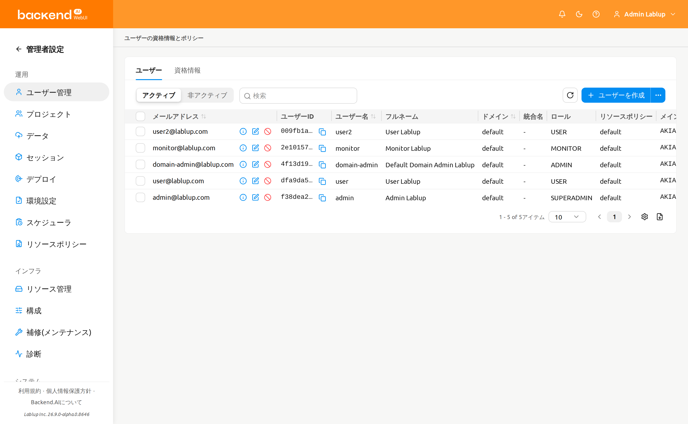
ユーザー一覧の参照と管理#
「+ ユーザーを作成」ボタンをクリックしてユーザーを作成できます。パスワードは8文字以上で、アルファベット、特殊文字、数字をそれぞれ1つ以上含む必要があります。メールアドレス、ユーザー名、フルネームの最大長は64文字です。
同じメールアドレスまたはユーザー名のユーザーが既に存在する場合、ユーザーアカウントを作成することはできません。他のメールアドレスとユーザー名を試してください。
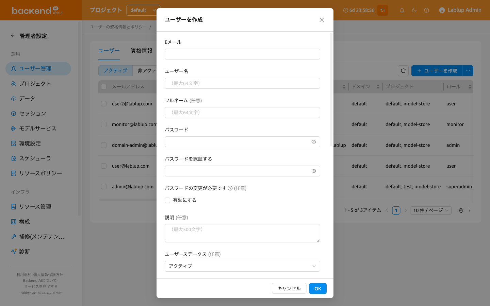
ユーザーが作成されたことを確認します。
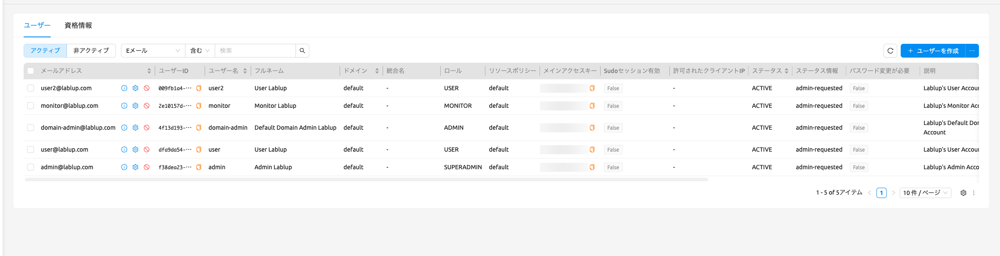
該当ユーザーのメール列の行にある情報アイコンをクリックすると、より詳細なユーザー情報を確認できます。ユーザーが所属するドメインやプロジェクトの情報も確認できます。
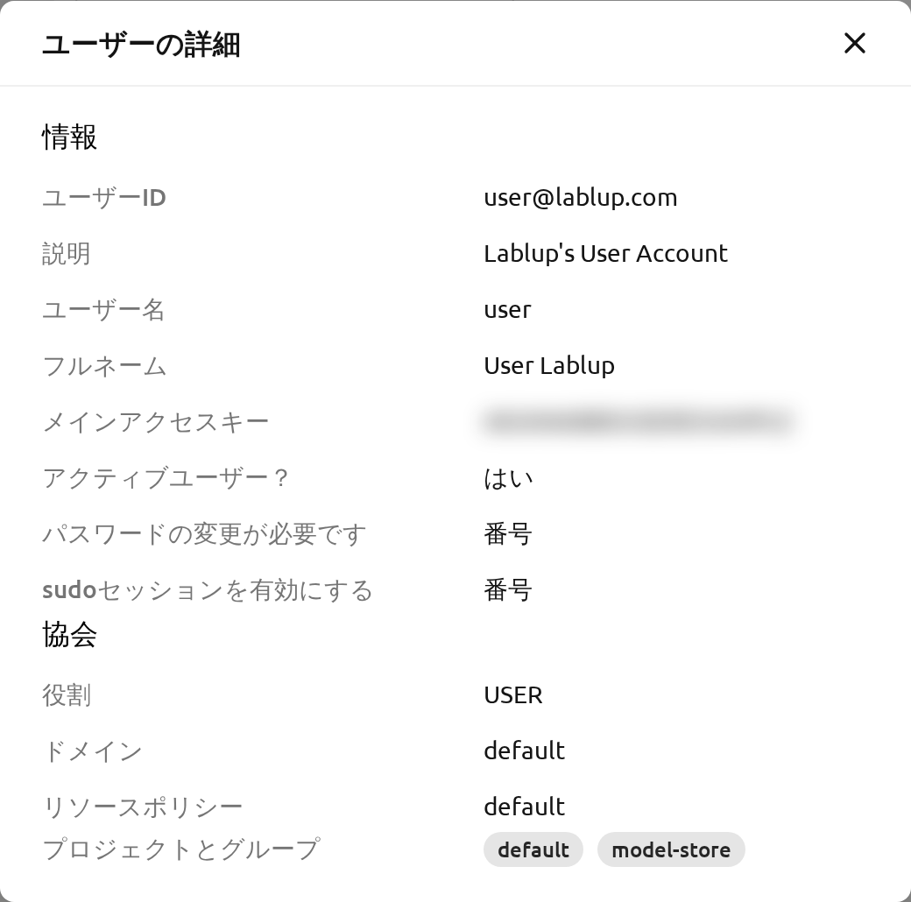
該当ユーザーのメール列の行にある編集（鉛筆）アイコンをクリックすると、既存のユーザーの設定を変更できます。ユーザー名、パスワード、有効化状態などを変更できます。ユーザーID（メールアドレス）は変更できません。変更を適用するには保存をクリックします。
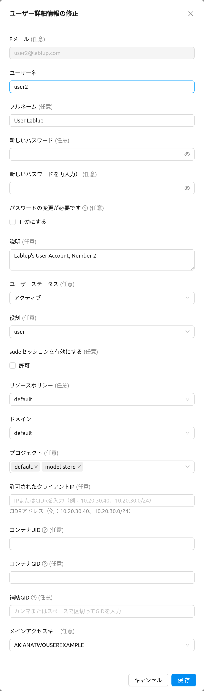
ユーザー作成/編集ダイアログには、以下のフィールドが含まれています。
Eメール: ユーザーのメールアドレスで、ログインIDとして使用されます。作成後は変更できません。
ユーザー名: ユーザーの一意の識別子です（最大64文字）。
フルネーム: ユーザーの表示名です（最大64文字）。
パスワード: 8文字以上で、アルファベット、特殊文字、数字をそれぞれ1つ以上含む必要があります。
パスワードの変更が必要: 管理者がユーザーを一括作成する際にランダムパスワードを選択した場合、このフィールドをONに設定してパスワード変更が必要であることを示せます。ユーザーにはパスワードの更新を促すトップバーが表示されますが、これは説明的なフラグであり、実際の使用には影響しません。
説明: ユーザーに関するオプションの説明です（最大500文字）。
ユーザーステータス: ユーザーの状態を示します。非アクティブユーザーはログインできません。確認前は、メール認証や管理者の承認など、アカウントを有効化するための追加手順が必要な状態を示します。非アクティブユーザーは別途非アクティブタブに表示されます。
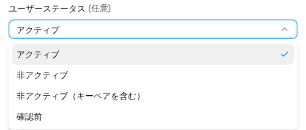
図 24.6 役割: ユーザーの役割（user、admin、superadmin）。現在のユーザーの権限によって選択可能なオプションが異なります。
sudoセッションを有効にする: ユーザーがコンピュートセッションでsudoを使用できるようにします。ユーザーがroot権限を必要とするパッケージのインストールやコマンドの実行時に便利です。ただし、セキュリティ上の問題を引き起こす可能性があるため、すべてのユーザーに対してこのオプションを有効にすることは推奨されません。
2要素認証が有効: ユーザーが二要素認証を使用しているかどうかを示すフラグです。二要素認証を使用している場合、ユーザーはログイン時に追加でOTPコードの入力が必要です。管理者は他のユーザーの二要素認証のみを無効化できます。
リソースポリシー: ユーザーが所属するユーザーリソースポリシーを選択できます。ユーザーリソースポリシーの詳細については、ユーザーリソースポリシーセクションを参照してください。
ドメイン: ユーザーが所属するドメインです。ユーザーの作成時と編集時の両方で設定できます。
プロジェクト: ユーザーが所属するプロジェクトを1つ以上選択します。選択したドメインによって利用可能なプロジェクトが異なります。
許可されたクライアントIP: このユーザーアカウントでシステムにアクセスできるIPアドレスを制限します。IPアドレスまたはCIDR表記で入力します（例：
10.20.30.40、10.20.30.0/24）。空の場合、すべてのIPからのアクセスが許可されます。コンテナUID: コンテナ内のプロセスに割り当てられる数値ユーザーIDです。ファイル権限の目的でコンテナが特定のUIDと一致する必要がある場合に便利です。
コンテナGID: コンテナ内のプロセスに割り当てられるデフォルトの数値グループIDです。
補助GID: コンテナプロセスに割り当てられる追加の数値グループIDです。複数のGIDをカンマで区切って入力します。
メインアクセスキー: （編集時のみ）ユーザーのキーペアの中からAPI認証に使用するメインアクセスキーを選択します。
ユーザー一覧では、複数の値を持つ列（許可されたクライアントIP と 補助GID）は最初の値だけをそのまま表示し、
残りは +N タグにまとめられます。タグにマウスを重ねると、列幅を広げなくてもすべての値を確認できます。
ユーザー一括作成#
複数のユーザーアカウントを一度に作成する必要がある場合、ユーザー一括作成機能を使用
できます。ユーザー管理ページのユーザーを作成ボタンの横に
省略記号（...）ドロップダウンボタンが表示されます。このドロップダウンボタンを
クリックし、ユーザー一括作成を選択すると、一括作成ダイアログが開きます。
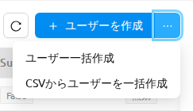
一括作成ダイアログには以下のフィールドがあります。ダイアログ上部の案内バナーに、 プレフィックスの後にゼロ埋めの連番が付加され、メールアドレスとユーザー名が自動生成 されるという説明が表示されます。
- メールアドレスの@より前の部分: 自動生成されるメールアドレスのプレフィックス部分 です。文字、数字、ドット、ハイフン、アンダースコアのみ使用可能です（最大30文字）。
- メールドメイン（@以降）: 自動生成されるメールアドレスのドメイン部分です。
このフィールドには
@プレフィックスが自動的に表示されます（最大30文字）。 - ユーザー数: 作成するユーザーアカウントの数です（1～100）。このフィールドの下に、
生成されるメールアドレスのリアルタイムプレビューが表示されます。4人以下の場合は
すべてのメールが表示され、5人以上の場合は最初の2つ、省略記号、最後のメールが表示
されます（例：
student01@example.com, student02@example.com ... student10@example.com）。 - パスワード: 作成されるすべてのユーザーの共有初期パスワードです。単一ユーザー 作成と同じパスワードルールが適用されます（8文字以上、英字・特殊文字・数字を 各1つ以上含む）。
- パスワードの変更が必要です: 一括作成時はデフォルトでONに設定されます。 有効にすると、各ユーザーは初回ログイン時にパスワードの変更を求められます。
- ステータス、ロール、sudoセッション有効化、リソースポリシー、ドメイン、プロジェクト、許可されたクライアントIPなどの残りのフィールドは、単一ユーザー作成と同じです。ユーザー一覧の参照と管理セクションを参照してください。
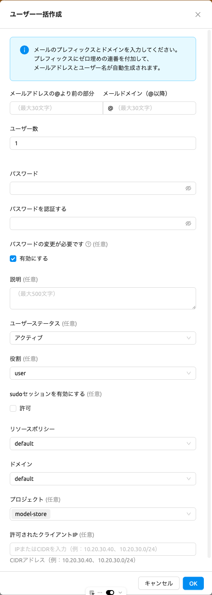
ユーザー名とメールアドレスは、入力したプレフィックスとサフィックスに基づいて自動生成
されます。例えば、メールプレフィックスを student、メールサフィックスを
example.com、ユーザー数を 10 に設定すると、以下のアカウントが作成されます：
| ユーザー名 | メールアドレス |
|---|---|
student01 |
student01@example.com |
student02 |
student02@example.com |
| ... | ... |
student10 |
student10@example.com |
連番はユーザーの総数に基づいてゼロ埋めされます。例えば、3人の場合は
student1 から student3、10人の場合は student01 から student10、100人の場合は
student001 から student100 となります。
生成されたユーザー名やメールアドレスの一部が既に存在する場合、操作は部分的に成功する ことがあります。作成されたユーザー数と失敗したユーザー数がメッセージに表示され、作成 できなかったユーザーとその理由が失敗一覧に表示されます。
CSVからユーザーを一括作成する#
ユーザーを直接一括作成する代わりに、CSVファイルをアップロードしてユーザーを作成することもできます。ユーザーを作成 ボタン横の省略記号（...）ドロップダウンをクリックし、CSVからユーザーを一括作成 を選択すると、CSVアップロードダイアログが開きます。
CSV ファイルの準備#
CSV ファイルは UTF-8 エンコーディングを使用する必要があります。先頭行はヘッダー行でなければなりません。ヘッダー名は大文字・小文字を区別せずに照合されます。ダイアログ内の CSV テンプレートをダウンロード をクリックすると、すぐに使えるテンプレートをダウンロードできます。
必須の列：
- email: ユーザーのメールアドレスで、ログインIDとして使用されます。
- username: ユーザーの一意のユーザー名です。
この2つの列のいずれかが欠けているファイルはアップロードが拒否され、どの列が不足しているかがダイアログに表示されます。
任意の列：
- password: 初期パスワードです。単一ユーザー作成と同じパスワードルールが適用されます（8文字以上、英字・特殊文字・数字を各1つ以上含む）。すべてのアカウントにパスワードは必要ですが、必ずしもファイルから取得する必要はありません。下記の注意を参照してください。
- full_name: ユーザーの表示名です。
- role: ユーザーのロール（
user、admin、またはsuperadmin）。省略した場合はuserになります。 - status: ユーザーの初期ステータス（
activeまたはinactive）。省略した場合はactiveになります。 - domain_name: ユーザーを割り当てるドメインです。省略した場合は現在のドメインになります。
- description: ユーザーに関するオプションの説明です。
- need_password_change: ユーザーが初回ログイン時にパスワードを変更する必要があるかどうか（
trueまたはfalse）。省略した場合はtrueになります。 - resource_policy: 割り当てるリソースポリシーの名前です。
- project: ユーザーを追加するプロジェクトの名前です。
アップロードと確認#
ダイアログの左側には デフォルト パネルがあります。ここで設定した値は、その項目が空になっているすべての行に
補われるため、CSVのセルごとに同じ値を繰り返し入力する必要はありません。パネルでは ドメイン、
プロジェクト、ユーザーリソースポリシー、パスワード、パスワードの変更が必要、説明 を指定でき、
指定しない項目には デフォルトなし と表示されます。
CSV ファイルを選択すると、ダイアログにすべての行を一覧表示するプレビューテーブルが表示されます。
- 有効なデータの行は通常どおり表示されます。
- 書式または検証エラーのある行は、インラインのエラーメッセージとともに強調表示されます。ソースファイルを修正してから再試行できます。
- プレビューの上部に有効な行数と無効な行数の合計が表示されます。
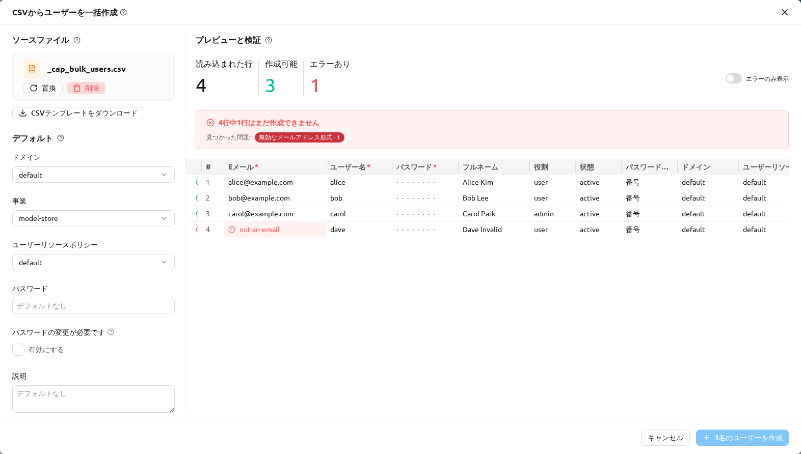
password 列のない CSV（たとえばユーザー一覧からエクスポートしたファイル）も問題なく読み込めます。該当する行には
パスワードは必須です。 という行ごとのエラーが表示され、そのエラーが残っている間は作成ボタンが無効のままです。
デフォルト パネルにパスワードを入力するとプレビューが即座に更新され、エラーが消えてボタンが有効になります。
ファイルを再アップロードする必要はありません。
ユーザーの作成#
プレビューを確認してすべての行が有効であることを確認したら、N人のユーザーを作成 をクリックして送信します。サーバー側でいくつかの行が失敗した場合（例えば、メールアドレスやユーザー名がすでに存在する場合）、ダイアログは開いたままになり、行ごとのエラーが表示されるので、競合を特定して解決できます。
一部の行だけが成功した場合は、N名のユーザーを作成しました。M名のユーザーの作成に失敗しました。 というメッセージが表示され、ダイアログの上に失敗一覧が開きます。この一覧には、作成できなかったユーザーのメールアドレス、ユーザー名、返されたエラーが表示されます。一部のアカウントが作成された場合は、生成されたキーペアの一覧が先に表示され、それを閉じると失敗一覧が続けて表示されます。作成済みのアカウントはそのまま残るため、報告された行だけを修正すれば十分です。
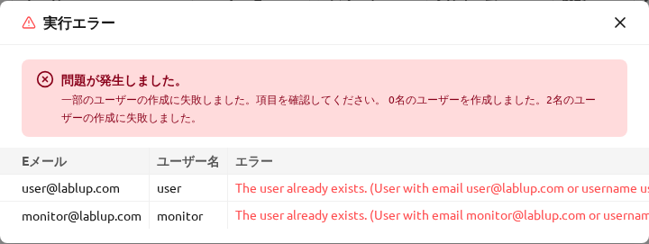
一部の行が失敗した場合、成功した行のみ新しいアカウントが作成されます。失敗した行は個別に報告されます。ソース CSV を修正して再アップロードし、残りのアカウントを作成してください。
ユーザーの一括編集#
複数のアカウントに同じ変更を適用したいとき — 別のドメインやプロジェクトへ移す、リソースポリシーを切り替える、 コンテナのUID／GIDを設定するなど — アカウントを1つずつ開かずに一度にまとめて編集できます。
- ユーザー一覧の行チェックボックスで対象のユーザーを選択します。
- ツールバーに選択件数が表示されます。その横の編集（鉛筆）ボタンをクリックします。
- ユーザーを一括編集 ダイアログが開きます。
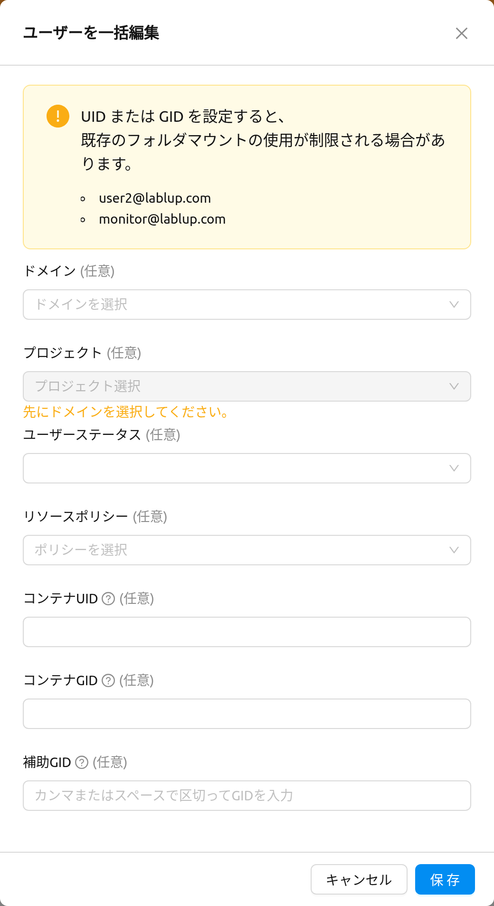
ダイアログ上部のアラートには、変更が適用されるすべてのユーザーのメールアドレスが並ぶため、実行前に選択内容を 確認できます。あわせて、UID または GID を設定すると既存のフォルダマウントの使用が制限される場合があるという 警告も表示されます。
ダイアログには次のフィールドがあります。触れなかったフィールドは、選択したどのユーザーでも変更されません。
- ドメイン: 選択したユーザーを別のドメインへ移します。変更すると プロジェクト の選択はクリアされます。
- プロジェクト: 選択したユーザーを1つ以上のプロジェクトに割り当てます。先にドメインを選択する必要があります。
- ユーザーステータス: アカウントをアクティブ、非アクティブ、非アクティブ（キーペアを含む）、確認前のいずれかに設定します。
- リソースポリシー: 選択したすべてのアカウントにユーザーリソースポリシーを適用します。
- コンテナUID、コンテナGID、補助GID: コンテナ内のプロセスに割り当てられる数値IDを設定します。
処理が終わると、選択したユーザーのうち何人が更新されたかがメッセージで通知されます。変更できなかったアカウントは 個別のエラーとして報告されます。
ユーザーアカウントの無効化#
ユーザーごとの使用統計を追跡し、メトリクスを保持し、誤ってアカウントを失うことを 防ぐため、ユーザーのログインを停止する推奨方法は、アカウントを削除するのではなく 無効化することです。無効化はユーザーのレコードをそのまま保持したまま、サインインのみを ブロックします。ユーザーを無効化するには、対象ユーザーのメール列の行にある無効化 アイコンをクリックします。確認ポップオーバーが表示されるので、非アクティブ化ボタンを クリックすることでユーザーを無効化できます。
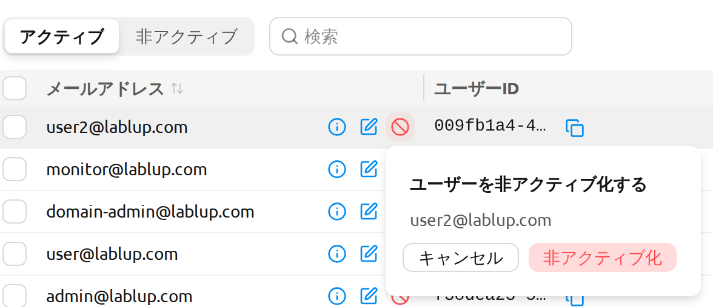
ユーザーを再度有効化するには、ユーザー管理ページの非アクティブタブに移動し、対象ユーザーの メール列の行にある再有効化（復元）アイコンをクリックします。確認ポップオーバーが 表示されるので、アクティブ化ボタンをクリックすることでユーザーを再有効化できます。
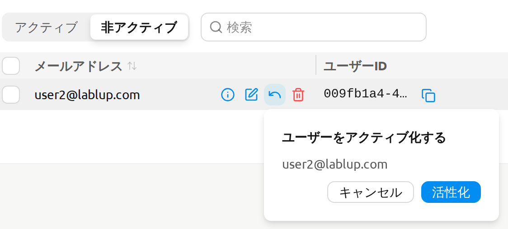
ユーザーアカウントは複数のキーペアを持つことができ、どのキーペアを再度有効化すべきかを 判断することが難しいため、ユーザーの無効化または再有効化を行っても、ユーザーの 認証情報は変更されない点にご注意ください。
日常的なアカウント管理は無効化に依存しますが、スーパー管理者は以下で説明する 完全削除（Purge）機能を使用して、すでに無効化されたアカウントを完全に削除できます。
非アクティブユーザーの完全削除#
スーパー管理者は、すでに無効化されたユーザーアカウントを完全に削除（purge）できます。 完全削除は非アクティブタブにあるユーザーに対してのみ可能で、アクティブなユーザーは 先に無効化する必要があります。無効化とは異なり、完全削除は元に戻すことができず、 ユーザーの関連データも併せて削除されます。
ユーザー管理ページで非アクティブタブに切り替えます（ステータスセレクターには、完全削除が ユーザーのキーペアにも影響することを示すために非アクティブ（キーペアを含む）と 表示されます）。次の2つの方法でユーザーを完全削除できます。
- 個別の完全削除: 非アクティブなユーザー1人のメール列の行で、ゴミ箱 （完全削除）アイコンをクリックします。
- 一括完全削除: 行のチェックボックスで1人以上の非アクティブなユーザーを選択し、 選択件数の横に表示されるユーザーを完全に削除ボタン（ゴミ箱ボタン）を クリックします。
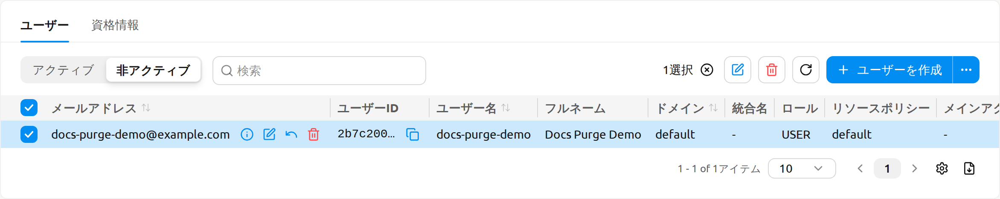
いずれの操作でもユーザーを完全に削除確認モーダルが開きます。この操作は元に戻せない ため、削除ボタンが有効になる前に、モーダルに表示された確認フレーズを入力する必要が あります。さらにモーダルには次の2つのオプションがあります。
- 共有された仮想フォルダも削除しますか？: チェックすると、完全削除されるユーザーが 共有していた仮想フォルダも併せて削除されます。チェックしない場合、それらのフォルダは そのまま残ります。
- 作成されたデプロイメントも削除しますか？: チェックすると、完全削除されるユーザーが 作成したデプロイメントも併せて削除されます。チェックしない場合、それらのデプロイメントは 削除されず、所有権が委任されます。
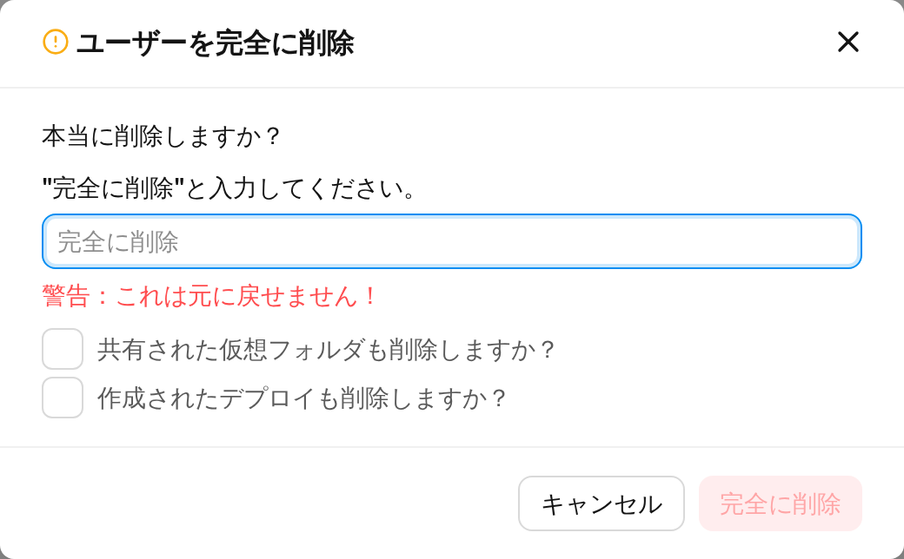
ユーザーの完全削除は元に戻せません。ユーザーの仮想フォルダ、カーネル履歴、および 関連するキーペアも併せて削除されます。確定する前に、正しいユーザーを選択しているか 必ず確認してください。
ユーザーのキーペア管理#
各ユーザーアカウントは通常、1つ以上のキーペアを持ちます。キーペアは、ユーザーがログインした後、 Backend.AIサーバーに対するAPI認証に使用されます。ログインにはユーザーのメールアドレスと パスワードによる認証が必要ですが、ユーザーがサーバーに送信するすべてのリクエストは、 キーペアに基づいて認証されます。
ユーザーは複数のキーペアを持つことができますが、キーペア管理の負担を軽減するため、現在は ユーザーのキーペアのうち1つだけを使用してリクエストを送信しています。また、新しい ユーザーを作成する際にキーペアは自動的に作成されるため、ほとんどの場合、手動でキーペアを 作成して割り当てる必要はありません。
キーペアは、ユーザー管理ページの「資格情報」タブで一覧表示できます。アクティブなキーペアは すぐに表示され、非アクティブなキーペアを確認するには、表の上にある「非アクティブ」を クリックしてください。
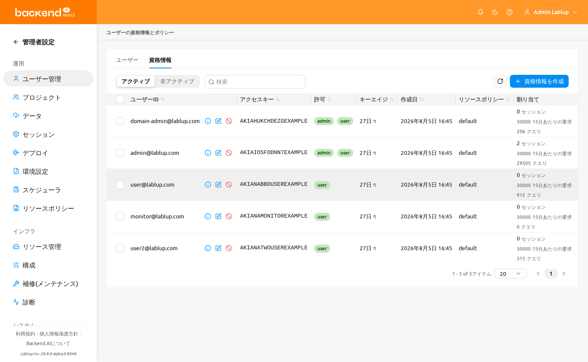
ユーザー管理タブと同様に、キーペアの行にあるインラインボタンを使用してキーペアの詳細を表示したり 編集したりできます。情報アイコンボタンをクリックすると、キーペアの詳細情報を 確認できます。必要に応じて、コピーボタンをクリックしてシークレットキーをコピーできます。
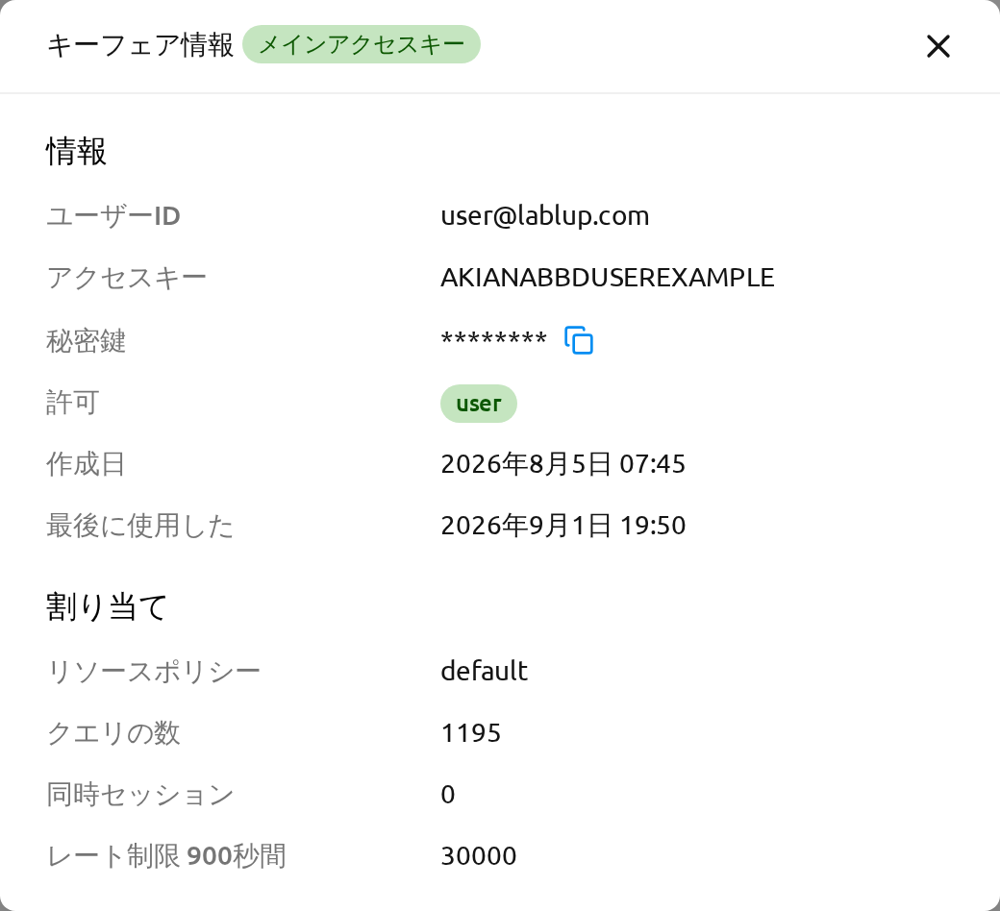
キーペアの行にある編集（鉛筆）ボタンをクリックすると、キーペアのリソースポリシーおよびレート制限を 変更できます。ダイアログのタイトルは キーペアリソースポリシーの更新 で、保存 をクリックすると変更が 適用されます。レート制限 の値が小さいと、ログインなどのAPI操作がブロックされる 可能性がある点にご注意ください。
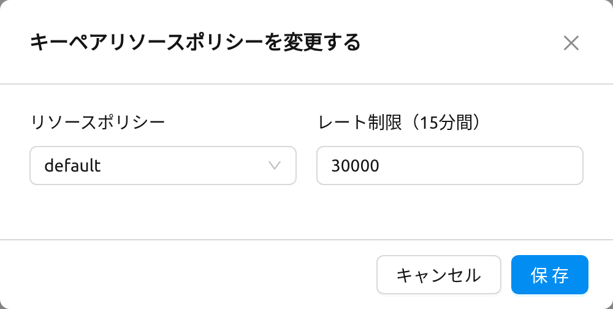
キーペアの行にある「非アクティブ化」ボタンまたは「活性化」ボタンをクリックすると、 キーペアを無効化または再有効化することもできます。ユーザー管理タブとは異なり、非アクティブタブでは キーペアを完全に削除できます。ただし、キーペアがユーザーのメインアクセスキーとして現在 使用されている場合は、完全に削除することはできません。
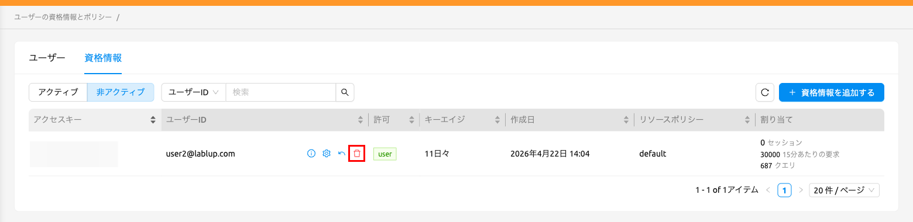
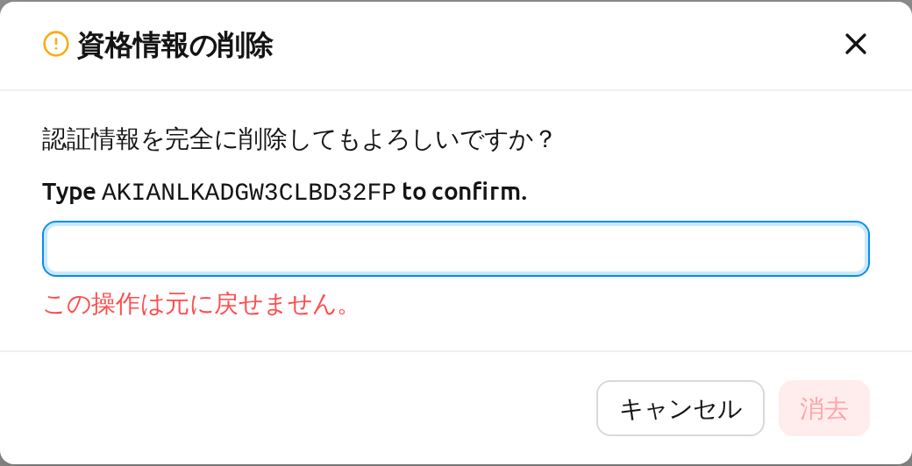
複数の資格情報を一括で有効化・無効化する#
行を1つずつ処理する代わりに、複数のキーペアの状態を一度に変更できます。
- 行チェックボックスでキーペアを選択します。
- ツールバーに選択件数が表示され、その横に状態変更ボタンが現れます。アクティブタブでは 非アクティブ化、 非アクティブタブでは 活性化 です。
- ボタンをクリックします。確認ダイアログに対象の資格情報の件数と、変更が所有者に与える影響が表示されます。
- 確認すると変更が適用されます。
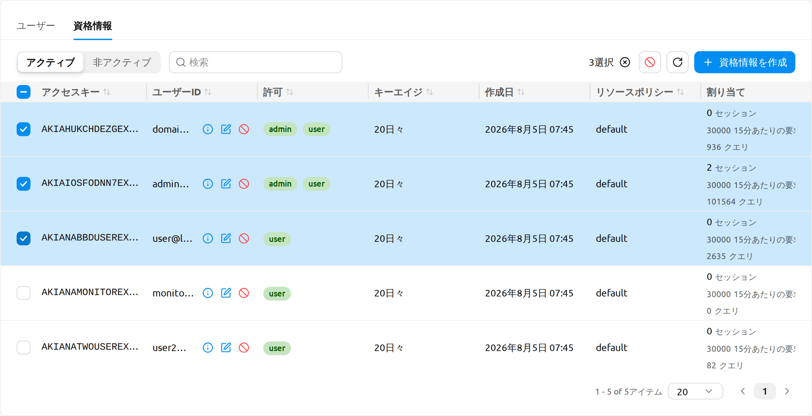
一部だけ成功した場合は、変更できた資格情報の件数と失敗した件数が結果メッセージに表示されます。タブの切り替え、 フィルターの変更、並べ替え、ページ移動を行うと選択は解除されます。
資格情報の作成#
誤ってキーペアを削除してしまった場合は、右上の資格情報を作成ボタンをクリックして、 ユーザーのキーペアを新たに作成できます。
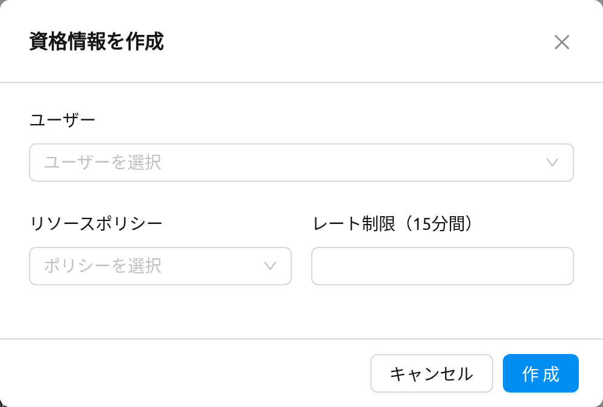
ダイアログには次のフィールドがあります。
ユーザー: 既存のユーザーアカウントを検索できる選択リストです。入力を始めると候補が絞り込まれるので、 新しいキーペアの所有者となるアカウントを選びます。リストから選ぶ方式のため、実在しないアドレスを送信することは できません。
リソースポリシー: 新しいキーペアに適用するキーペアリソースポリシーです。
レート制限（15分あたり）: 15分以内にBackend.AIサーバーに送信できるリクエストの 最大数です。例えば1000に設定した場合、キーペアが15分以内に1000を超えるAPI リクエストを送信すると、サーバーがエラーを返してリクエストを受け付けません。デフォルト値の 使用を推奨し、ユーザーの利用パターンに応じてAPIリクエストの頻度が高まった場合にのみ 値を増やすことを推奨します。
受け付けられる最大値は 50000 です。それより大きい値を入力すると
レート制限はゼロより大きく、50000未満である必要があります。という検証メッセージが表示されて送信がブロックされる ため、入力した値が黙って切り下げられることはありません。100以下の値も入力できますが、レート制限が小さいと ログインなどの操作がブロックされる可能性があるため警告が表示されます。
プロジェクトメンバーとプロジェクトストレージフォルダを共有する#
Backend.AIはユーザー独自のストレージフォルダに加えて、プロジェクト用のストレージフォルダを 提供します。プロジェクトストレージフォルダは、特定のユーザーではなく特定のプロジェクトに 属するフォルダであり、そのプロジェクトのすべてのユーザーがアクセスできます。
プロジェクトフォルダは管理者のみが作成できます。一般ユーザーは、管理者が作成した プロジェクトフォルダの内容にアクセスすることのみ可能です。システム設定によっては、 プロジェクトフォルダが許可されない場合があります。
まず、管理者アカウントでログインし、プロジェクトフォルダを作成します。データページに 移動してから、「フォルダー作成」をクリックしてフォルダ作成ダイアログを開きます。 フォルダ名を入力し、タイプをProjectに設定します。タイプがProjectに設定されると、ヘッダーの プロジェクトセレクタで選択されているプロジェクトに自動的に割り当てられます。 権限は読み取り専用に設定されます。
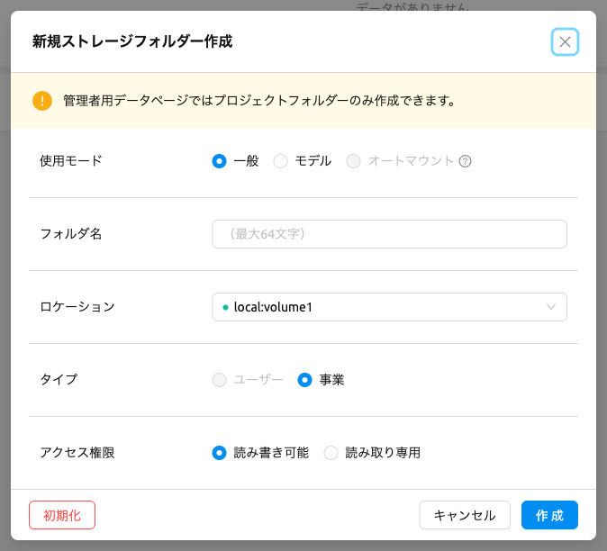
フォルダが作成されたことを確認した後、ユーザーBのアカウントでログインし、データページに 招待手続きなしで作成したばかりのプロジェクトフォルダが表示されることを 確認します。アクセス権限パネルに R（読み取り専用）が表示されていることも確認できます。
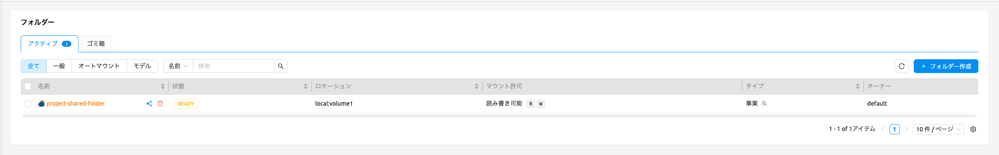
モデルデプロイ#
管理者デプロイページ#
管理者およびスーパー管理者は、クラスター内のすべてのデプロイメントを横断的に表示できる管理者デプロイページ（/admin/deployments）にアクセスできます。プロジェクト 列はデプロイメント一覧で利用できますが、既定では非表示になっています。列設定から表示を有効にできます。
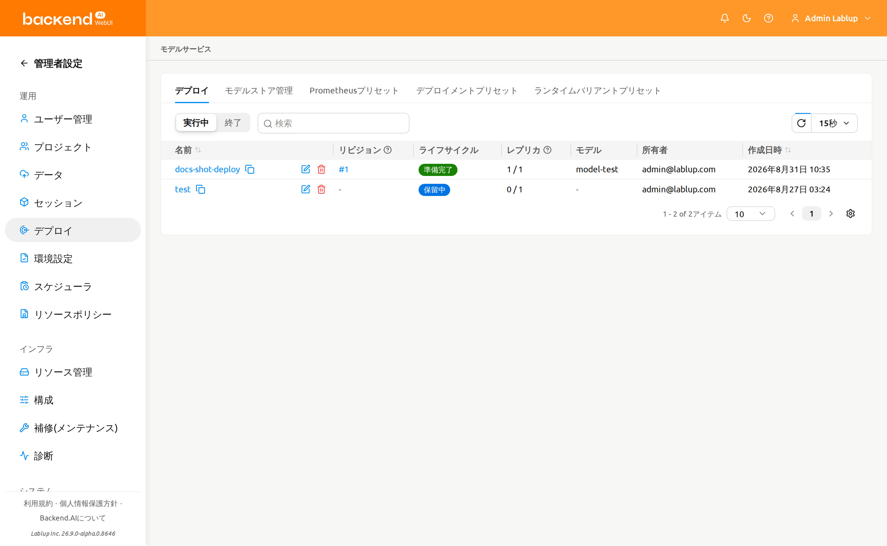
管理者デプロイページには最大 4 つのタブがあります:
- デプロイ: すべてのプロジェクトのデプロイメント一覧を表示し、ユーザー向けデプロイページと同じライフサイクルおよびプロパティフィルターを提供します。
- モデルストア管理: 下記の管理者モデルストア管理セクションを参照してください。
- Prometheusプリセット: 管理者が再利用可能な Prometheus クエリプリセットを管理できるタブです。詳細は下記のPrometheusクエリプリセットセクションを参照してください。
- デプロイメントプリセット: 管理者がエンドユーザーのデプロイ時に適用できる、再利用可能なデプロイメントプリセットを管理できるタブです。詳細は下記のデプロイメントプリセットセクションを参照してください。
各管理者向けデプロイメントは、管理者デプロイページ配下のアドレス /admin/deployments/<デプロイメントID> を持ちます。管理者デプロイページからデプロイメントを開くと URL がこのパスに切り替わるため、デプロイメント詳細ページを直接リンクしたりブックマークしたりできます。
デプロイメント詳細ページ#
デプロイメント詳細ページの リビジョン（Revisions） カードには、次の 3 つのタブがあります。
- 現在のリビジョン（Current Revision）: 現在稼働中のリビジョンの構成を表示します。イメージ、リソース、クラスター設定などに加え、vLLM／SGLang のリビジョンでは ランタイムパラメータ（Runtime Parameters） 行が表示され、このリビジョンに設定されたランタイムパラメータを確認できます。
- リビジョン履歴（Revision History）: 過去のリビジョンを一覧表示します。任意のリビジョンをクリックすると詳細ビューが開き、そのリビジョンの構成全体を確認できます。vLLM／SGLang のリビジョンでは、こちらにも ランタイムパラメータ（Runtime Parameters） 行が表示されます。
- 監査ログ（Audit Log）: このデプロイメントに対して実行されたアクションの記録を表示します。
監査ログタブはデプロイメントに関するすべてのアクション履歴を追跡します。各エントリには次の情報が含まれます。
- 時間（Time）: アクションが実行されたタイムスタンプです。
- 操作（Operation）: 実行されたアクションの種類です。
- ステータス（Status）: 操作の結果ステータスです。
- 説明（Description）: 操作に関する追加の詳細情報です。
- 所要時間（Duration）: 操作が完了するまでにかかった時間です。
- 実行者（Triggered By）: アクションを開始したユーザーです。
ステータス（Status）、操作（Operation）、実行者（Triggered By）、および時間（Time）の日付範囲フィルターで表示を絞り込めます。
管理者モデルストア管理#
スーパー管理者は、管理者デプロイページのモデルストア管理（Model Store Management）タブを通じてモデルカードを管理できます。
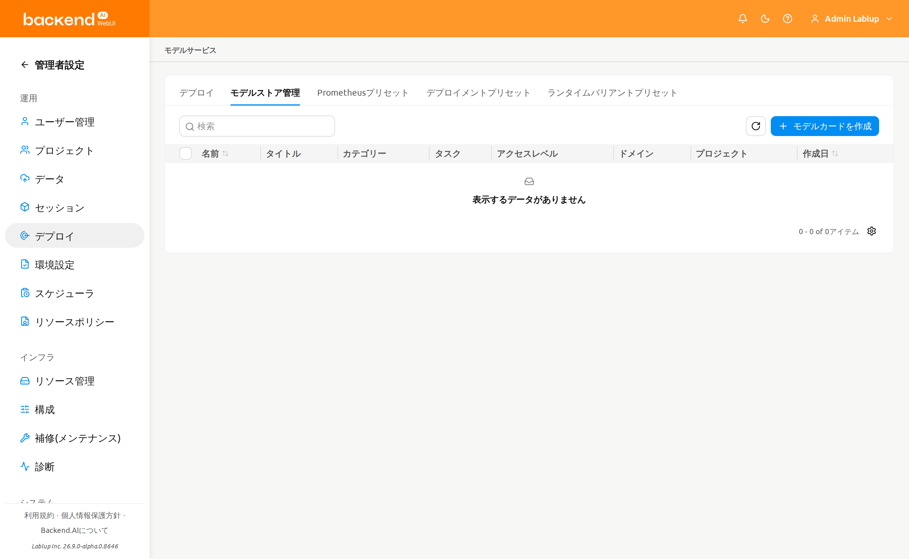
一覧には次の列が表示されます：
- 名前（Name）: モデルカードの一意の識別子です。
- タイトル（Title）: 人間が読みやすい表示名です。
- カテゴリ（Category）: モデルカテゴリです（例：LLM）。
- タスク（Task）: 推論タスクタイプです（例：text-generation）。
- アクセスレベル（Access Level）: モデルカードが公開アクセス可能な場合は緑色の
Publicタグが、それ以外の場合はデフォルトのPrivateタグが表示されます。 - ドメイン（Domain）: モデルカードを所有するドメインです。
- プロジェクト（Project）: モデルカードを所有するプロジェクトです。
- 作成日時（Created At）: モデルカードが作成された時間です。
上部のプロパティフィルターバーで、次のプロパティを使って一覧を絞り込めます。
- 名前（Name）: モデルカードの名前で検索します（テキスト一致）。
- ドメイン（Domain）: 所有ドメインで検索します（テキスト一致）。
- プロジェクト（Project）: 所有プロジェクトの UUID で検索します。値はフィルター適用前に検証されるため、形式が正しくない識別子は空の一覧ではなくメッセージで通知されます。
- ストレージホスト（Storage Host）: 紐づくフォルダのストレージホストで検索します。値を直接入力するのではなく、このクラスターに登録されたホストの一覧から選択し、等しい（equals）／等しくない（not equals）の両方の演算子を使用できます。
各行の名前セルには、編集および削除のアクションアイコンが直接表示されます。
複数のモデルカードを一度に削除するには、チェックボックスで削除する行を選択し、選択件数の横にある赤色のゴミ箱ボタンをクリックします。カードが削除される前に確認ダイアログが表示されます。
モデルカードの作成#
モデルカードを作成 ボタンをクリックして作成モーダルを開きます。以下のフィールドを入力します：
名前（Name）（必須）: モデルカードの一意の識別子です。
タイトル（Title）: 人間が読みやすい表示名です。
説明（Description）: モデルの詳細な説明です。
著者（Author）: モデルの作成者または組織です。
モデルバージョン（Model Version）: モデルのバージョンです。
タスク（Task）: 推論タスクタイプです（例：text-generation）。
カテゴリ（Category）: モデルカテゴリです（例：LLM）。
フレームワーク（Framework）: 使用される ML フレームワークです（例：PyTorch、TensorFlow）。
ラベル（Label）: 分類およびフィルタリング用のタグです。複数のタグはカンマ（
,）で区切って入力します。ライセンス（License）: モデルが配布されるライセンスです。
アーキテクチャ（Architecture）: モデルアーキテクチャです（例：Transformer）。
README: モデルのマークダウン README です。
ドメイン（Domain）: モデルカードを関連付けるドメインです。既定では現在のユーザーが所属するドメインが自動的に選択されます。
プロジェクト ID（Project ID）（必須）: モデルカードを所有するプロジェクトです。
VFolder（必須）: モデルファイルを含むストレージフォルダーです。
アクセスレベル（Access Level）: ユーザー向けモデルストアでモデルカードを誰が閲覧できるかを制御します。
Internal: モデルカードを所有するドメインとプロジェクトの管理者にのみ表示されます。一般ユーザーは、自分のモデルストアで Internal のモデルカードを閲覧できません。Public: 該当プロジェクトにアクセス権を持つすべてのユーザーに表示されます。
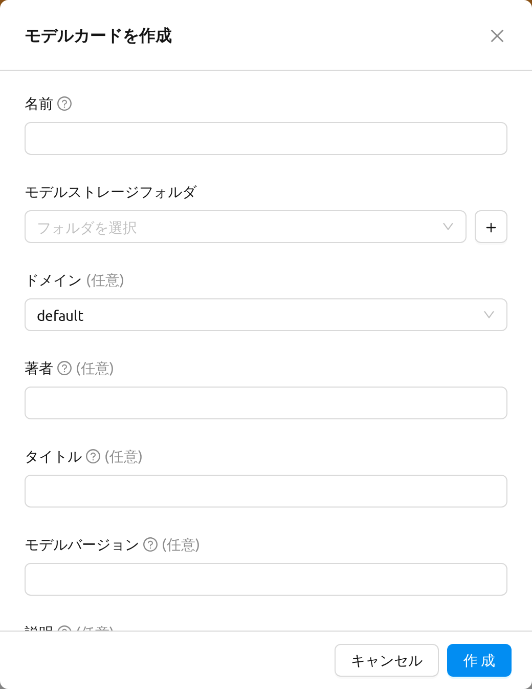
モデルカードの編集#
モデルカード名の横にある編集アイコンをクリックして、既存のモデルカードを変更します。以前に入力したフィールドが入力された状態で編集モーダルが開きます。作成時と同様に、ラベル（Label） フィールドではカンマ（,）でタグを区切り、ドメイン（Domain） フィールドには現在のユーザーのドメインが既定で入力されます。
モデルカードの削除#
モデルカード名の横にある削除アイコンをクリックして個別のモデルカードを削除するか、行のチェックボックスで複数のモデルカードを選択したうえで、選択件数の横にある赤色のゴミ箱ボタンをクリックして一括削除を実行できます。
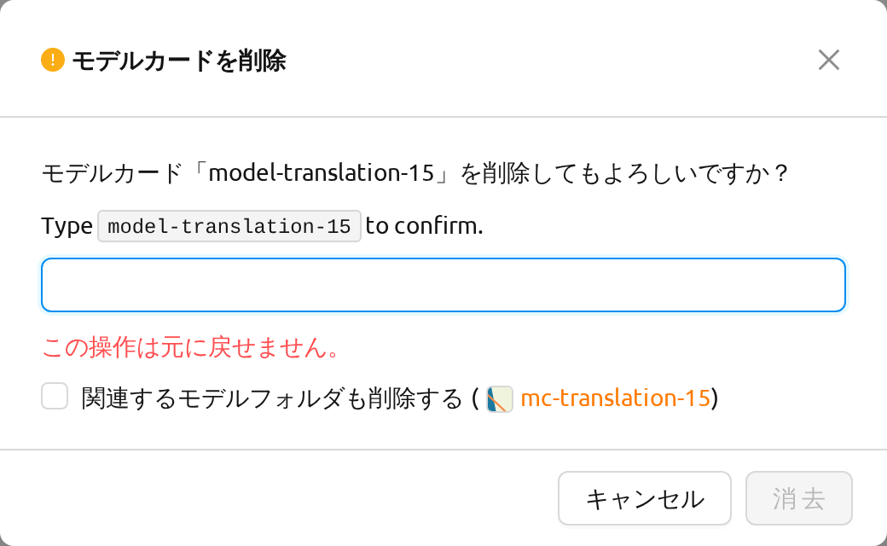
削除確認ダイアログには 関連するモデルフォルダも削除する オプションが含まれています：
- このオプションをチェックすると、モデルカードが削除されると同時に、そのモデルカードに紐づくストレージフォルダ（vfolder）がゴミ箱に移動されます。ゴミ箱通知が併せて表示されるため、スーパー管理者は紐づくフォルダがゴミ箱に送られたことを確認でき、必要に応じて データ > ゴミ箱 からフォルダを復元できます。関連するフォルダを削除すると、そのフォルダを参照している他のすべてのモデルカードも一緒に削除される点にご注意ください。
- このオプションのチェックを外した場合は、モデルカードのレコードのみが削除され、紐づくストレージフォルダはそのまま残るため、別のモデルカードに再利用できます。
一括削除 でも同じ挙動になります（ラベルは 関連するモデルフォルダをすべて削除する に変わります）。オプションをチェックすると、選択した各モデルカードに紐づくストレージフォルダがゴミ箱に移動され、移動されたフォルダごとにゴミ箱通知が表示されます。
Prometheus クエリプリセット#
Backend.AI では、管理者が再利用可能な Prometheus クエリプリセット を定義でき、オートスケーリングルールなどの監視機能から名前で参照できます。1 つのプリセットには、メトリクス名、PromQL クエリテンプレート、任意の時間ウィンドウ、任意のフィルタ／グループラベルがまとめられているため、運用者が同じクエリをルールごとに入力し直す必要はありません。
プリセットは、管理者デプロイページの Prometheusプリセット タブ（/admin/deployments?tab=prometheus-preset）から管理します。
スーパー管理者がデプロイのオートスケーリングルールエディターを開き、メトリクスソース を Prometheus に設定してプリセットを選択すると、プリセットセレクターの下に 現在の値(Current value) のライブプレビューが表示されます。このプレビューはスーパー管理者アカウントにのみ表示され、一般ユーザーやドメイン管理者には表示されません。
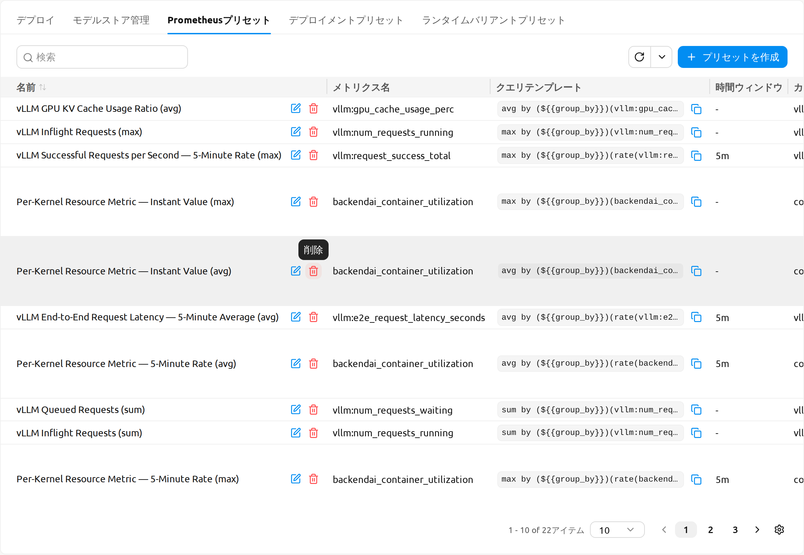
一覧とフィルタ#
プリセットテーブルには、クラスタ全体に登録されたすべての Prometheus クエリプリセットが表示されます。各行には次の情報が含まれます。
- 名前: プリセットを識別するための一意で人間が読みやすい名前です。このセルでは、インラインの 編集 および 削除 アクションも利用できます。
- ID: プリセットの内部識別子です。
- メトリクス名: このプリセットが報告するメトリクスで、オートスケーリングルールなどのコンシューマーが表示ラベルとして使用します。
- クエリテンプレート: 実行される PromQL 式です。セルは コピー可能 で、値にホバーしてコピーアイコンをクリックすると、テンプレート全体をクリップボードにコピーできます。Prometheus UI にテンプレートを貼り付けて結果を確認したい場合に便利です。
- 時間ウィンドウ: クエリがレンジベクタを参照する場合に使用される既定のルックバック期間（例:
5m）です。 - カテゴリ: プリセットが属する任意のカテゴリ（解決されたカテゴリ名とカテゴリ ID が併せて表示されます）。
- オプション: コンシューマーがプリセットに対して追加で適用できる フィルタラベル と グループラベル です。
- 作成日時 / 更新日時: サーバーが自動的に管理するタイムスタンプです。
テーブル上部のプロパティフィルタで一覧を検索・絞り込みでき、任意の列見出しをクリックすることで並び順を変更できます。
列設定の保持#
テーブルには、不要な列を非表示にしたり表示する列の順序を変更したりできる列設定コントロールが含まれています。選択した設定は ブラウザごとにセッションをまたいで保持 されるため、次にこのタブを訪れた際にも希望のレイアウトで開きます。列設定をリセットすると、Backend.AI の既定レイアウトに戻ります。
プリセットを作成する#
テーブル右上の プリセットを追加 をクリックして プリセットを作成 モーダルを開きます。
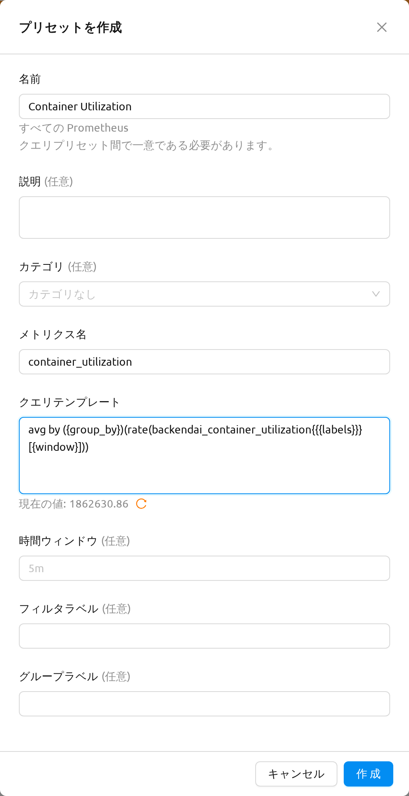
モーダルには次のフィールドがあります。
- 名前: プリセットの一意の名前です。すべての Prometheus クエリプリセット間で一意である必要があります。
- 説明: セレクタなどでプリセットと一緒に表示される自由記述の説明です。
- カテゴリ: 関連するプリセットをグループ化するための任意のカテゴリです。自由入力ではなく、サーバーに定義されたカテゴリから選ぶドロップダウンで、空のままにすると カテゴリなし になります。カテゴリ一覧の読み込み中はこのフィールドに読み込み表示が出ますが、他の項目はそのまま入力できます。
- メトリクス名: コンシューマー（例: オートスケーリングルール）に表示されるメトリクスラベルです。
- クエリテンプレート: 実行する PromQL 式です。入力中、フィールドの下にある ライブプレビュー 領域が作成中のテンプレートが Prometheus インスタンスに対して返す値をその場で表示します。これにより、保存前にテンプレートが期待どおり動作することを確認できます。プレビューはデバウンス処理され、編集に応じて自動的に更新されます。
- 時間ウィンドウ: レンジベクタに使用する既定のウィンドウ（例:
5m）です。クエリがレンジベクタを使用しない場合は空のままにします。 - フィルタラベル: コンシューマーがプリセットに対して追加で適用できる任意のラベルセレクタのリストです。
- グループラベル: クエリ結果をグループ化するための任意のラベルのリストです。
作成 をクリックしてプリセットを保存します。成功すると、プリセットが一覧に表示され、確認トーストが表示されます。
このダイアログは開くたびに必ず空の状態から始まります。以前に入力した値や、直前に編集していたプリセットの値が、 次の プリセットを作成 や プリセットを編集 のダイアログに引き継がれることはありません。
プリセットを編集する#
プリセット行の 名前 セルにある 編集 アクションをクリックすると、プリセットを編集 モーダルが開きます。モーダルにはプリセットの現在の値があらかじめ入力されており、クエリテンプレートのライブプレビュー領域を含めて作成ダイアログと同じフィールドが提供されます。
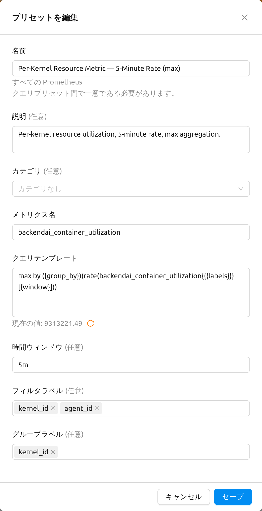
セーブ をクリックして変更を適用します。プリセットを参照しているコンシューマー（例: オートスケーリングルール）は、次にメトリクスを評価する際に新しいクエリテンプレートを自動的に取り込みます。
プリセットを削除する#
プリセット行の 名前 セルにある 削除 アクションをクリックすると、削除確認モーダルが開きます。
Prometheus クエリプリセットの削除は 完全な削除であり、元に戻すことはできません。削除されたプリセットを参照しているオートスケーリングルールなどはクエリテンプレートを失い、別のプリセットを参照するように再構成されるまで正常に動作しなくなる可能性があります。
削除は元に戻せないため、ダイアログでは 削除 ボタンが有効になる前に確認入力欄に プリセット名を入力する 必要があります。ダイアログのタイトルに表示されているプリセット名を正確に入力し、削除 をクリックして確定してください。
デプロイメントプリセット#
デプロイメントプリセット（Deployment Preset） は、イメージ、ランタイム、リソーススロット、クラスターモード、環境変数、起動コマンド、レプリカ数、公開可否など、モデルデプロイに必要な既定値を一つのテンプレートとして管理者が定義する仕組みです。エンドユーザーはストレージフォルダからモデルをデプロイする際にこのプリセットを適用でき、管理者は vLLM-GPU-Large や SGLang-CPU-Small のように組織が検証済みのデプロイ構成を提供できます。ユーザーは高度なオプションをすべて手動で入力することなく、モデルを素早くデプロイできます。
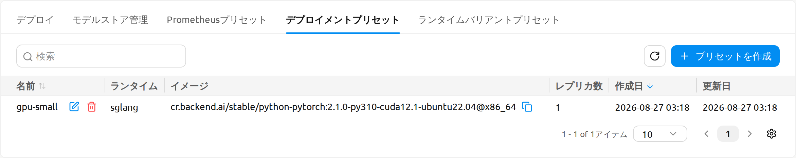
デプロイメントプリセットとは#
デプロイメントプリセットはモデルデプロイの既定値を保存することで、次のような利点をもたらします。
- 管理者：組織のハードウェアやポリシーに合った検証済みのデプロイ構成カタログをユーザーに提供できます。
- エンドユーザー：データページの プリセットで新規デプロイメント作成 フローでプリセットを選択すれば、高度なフィールドを手動で入力する必要がありません。
- 運用担当者：組織全体でリソース割り当て、ランタイム、公開可否の既定値を一貫して適用できます。
プリセットからデプロイを作成すると、プリセットの値がデプロイランチャーに自動的に反映されます。ユーザーはデプロイを確定する前にそれらの値を自由に確認・調整できます。
各プリセットには次の項目が保存されます。
- 基本情報：名前、説明、ランタイム、ランタイムパラメータ（Custom 以外のランタイム時に表示）、イメージ。
- リソース：リソーススロット（CPU、メモリ、GPU）、共有メモリ（SHM）、リソースオプション。
- クラスター：クラスターモード（Single Node または Multi Node）とクラスターサイズ。
- モデル＆実行：起動コマンド、ブートストラップスクリプト、環境変数。
- デプロイ：レプリカ数、リビジョン履歴の保持数、一般公開（公開可否）の既定値。
- モデル定義（任意）：モデル名、モデルパス、サービス構成（ポート、起動コマンド、事前起動アクション）、ヘルスチェック設定、メタデータ。
デプロイメントプリセットの管理#
デプロイメントプリセットを作成・編集・削除できるのは管理者だけです。管理者は、管理者向けデプロイページの デプロイメントプリセット タブからプリセットを管理します。
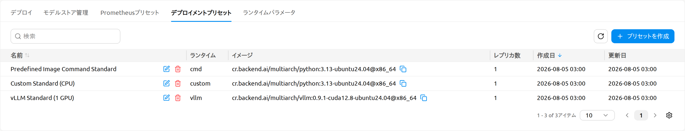
リストには各プリセットの主要な項目が表示されます。管理者はこの画面で次の操作を行えます。
- 名前またはランタイムでプリセットをフィルターします。
- プリセットの詳細画面を開いて構成全体を確認します。
- プリセットを作成、編集、削除します。
既定では次の列が表示されます：名前、ランタイム、イメージ（<canonicalName>@<architecture> 形式で表示され、コピー可能）、レプリカ数、作成日時、変更日時（プリセットが最後に更新された日時を表示）。
テーブルヘッダー右側の列表示設定（歯車）ボタン（⚙）を使用して、次の列を表示または非表示にできます：説明、起動コマンド（長い値はツールチップ付きで省略表示され、コピー可能）、クラスター、戦略（Strategy）、一般公開（Public／Private タグで表示）、リビジョン履歴の保持数。
デプロイメントプリセットを作成する#
プリセット一覧の右上にある プリセットを作成 ボタンをクリックすると、プリセットを作成 ダイアログが開きます。ダイアログは複数のカードで構成されており、各カードに入力していきます。
- 基本情報：
- 名前（必須）：一意のプリセット名（例：
vLLM-GPU-Large）。 - 説明：プリセットの用途を簡潔に説明します。
- ランタイム（必須）：ランタイムバリアント（例：vLLM、SGLang、Custom）。
- ランタイムパラメータ：Custom 以外のランタイムを選択した場合にのみ表示されます。サービングフレームワークのパラメータをタブで整理して設定できます（例：Model Loading、Resource Memory、Serving Performance など）。必須パラメータにはラベルの横に赤いアスタリスク（★）が表示され、すべての必須パラメータが入力されるまで保存ボタンは無効のままになります。
- イメージ（必須）：デプロイに使用するコンテナイメージ。イメージは
<canonicalName>@<architecture>形式で一覧表示されます（例：cr.backend.ai/stable/pytorch:2.1-cuda12.1@aarch64）。この形式は、複数アーキテクチャが混在するクラスターで CPU アーキテクチャごとにイメージを区別するのに役立ちます。
- 名前（必須）：一意のプリセット名（例：
- リソース：リソーススロット（CPU、メモリ、GPU）、共有メモリ、リソースオプション（キー／値ペア）。
- クラスター：クラスターモード（Single Node または Multi Node）とクラスターサイズ。
- モデル＆実行：起動コマンド、ブートストラップスクリプト、環境変数。起動コマンド フィールドにはシェル構文のヒントが表示されます。コマンドは
/bin/bash -c <コマンド>として実行されるため、cmd1; cmd2のように複数のコマンドをシェル構文でつなげることができます。 - モデル定義（任意）：トグルを有効にすると、構造化されたモデル定義を設定できます。有効にすると次の項目を設定できます。
- モデル名 および モデルパス：モデルの識別子とコンテナ内の場所。
- サービス構成（任意）：ポート、シェル、起動コマンド、事前起動アクション。
- ヘルスチェック（任意）：ヘルスチェックを有効化 トグルがあります（既定はオフ）。オフの場合、ヘルスチェックの各フィールドは非表示になります。オンにすると、パス、間隔、最大リトライ回数、最大待機時間、想定ステータスコード、起動猶予期間の各フィールドが表示されます。
- メタデータ（任意）：作成者、タイトル、バージョン、タスク、カテゴリなど。
- デプロイ：
- レプリカ数（必須）：このプリセットから生成されるデプロイの既定レプリカ数。
- リビジョン履歴の保持数：このプリセットから生成された各デプロイで保持される過去リビジョンの数。
- 一般公開：このプリセットから生成されたデプロイのエンドポイントを、アクセストークンなしで到達可能にするかの既定値（チェックボックス）。
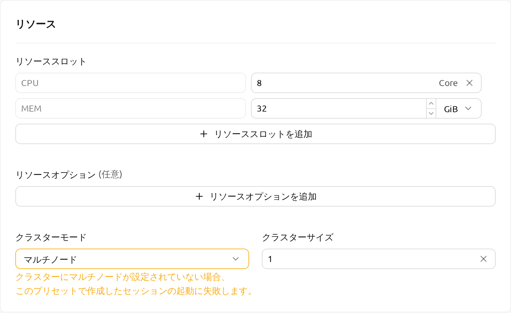
入力が完了したら、プリセットを作成 ボタンをクリックして保存します。成功通知が表示されます。
必須フィールドが未入力または不正な場合、プリセットを作成 ボタンは無効のままになります。必須フィールドには入力中にインラインの検証メッセージが表示されます。
デプロイメントプリセットを編集する#
- プリセット一覧の行アクションメニュー（またはプリセット詳細画面）から プリセットを編集 を選択します。
- プリセットを編集 ダイアログが現在の値で事前に入力された状態で開きます。使用可能なセクションは プリセットを作成 ダイアログと同じで、vLLM および SGLang ランタイム向けの ランタイムパラメータ セクションも含まれます。
- 必要な値を変更し、プリセットを編集 ボタンをクリックして保存します。
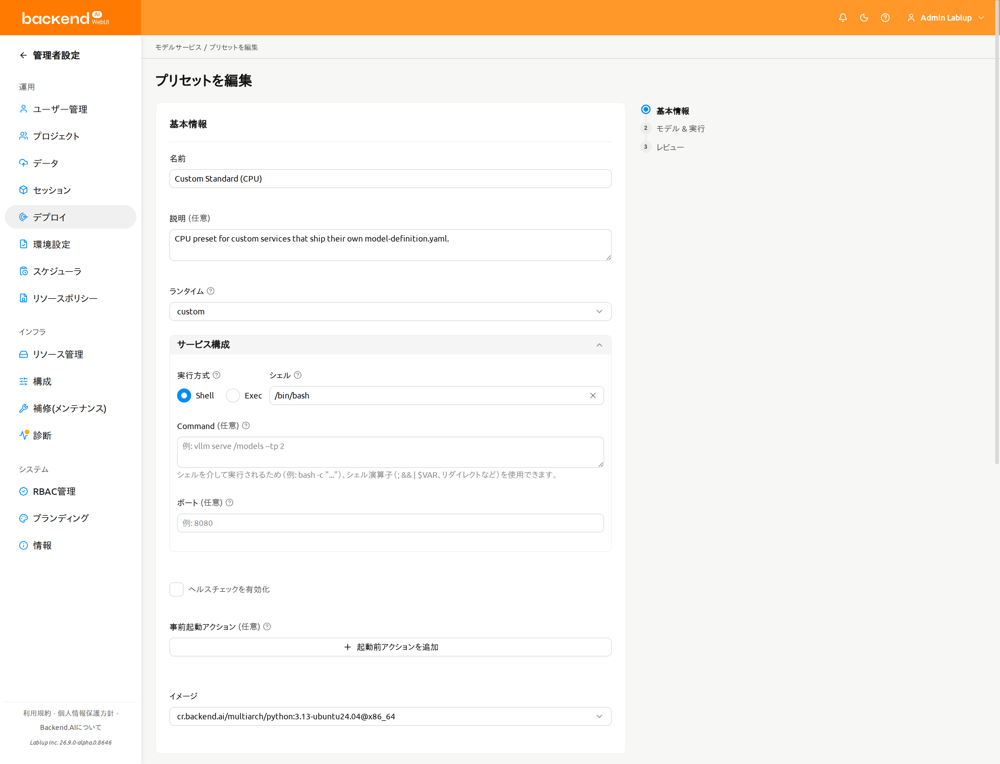
プリセットを編集すると、今後 作成されるデプロイの既定値のみが変更されます。すでにこのプリセットから作成された既存のデプロイには影響しません。
デプロイメントプリセットを削除する#
- プリセット一覧（またはプリセット詳細画面）のアクションメニューから プリセットを削除 を選択します。
- プリセット名を入力して確認するタイプ確認ダイアログが表示されます。入力した値がプリセット名と完全に一致するまで 確認 ボタンは無効のままです。
- プリセット名を入力し、確認 をクリックします。
デプロイメントプリセットの削除は 元に戻せません。プリセット自体は削除されますが、すでにそのプリセットから作成されたデプロイは影響を受けずに動作し続けます。今後はこのプリセットを参照できません。
モデルをデプロイする際にプリセットを使う#
エンドユーザーは、データページでストレージフォルダからモデルをデプロイする際に開く プリセットで新規デプロイメント作成 モーダルを通じて、デプロイメントプリセットを適用します。
- データページで、デプロイしたいモデルフォルダを見つけます。
- フォルダの行にある デプロイ ボタンをクリックします。
- プリセットで新規デプロイメント作成 モーダルが開きます。適用するデプロイメントプリセットと、対象のリソースグループを選択します。
- デプロイ前にプリセットの構成を確認したい場合は、プリセットセレクターの横にある ⓘ（情報）ボタンをクリックして デプロイメントプリセット詳細 ビューを開きます。
- 確認 をクリックすると、選択したプリセットの値を使用してデプロイメントが作成されます。
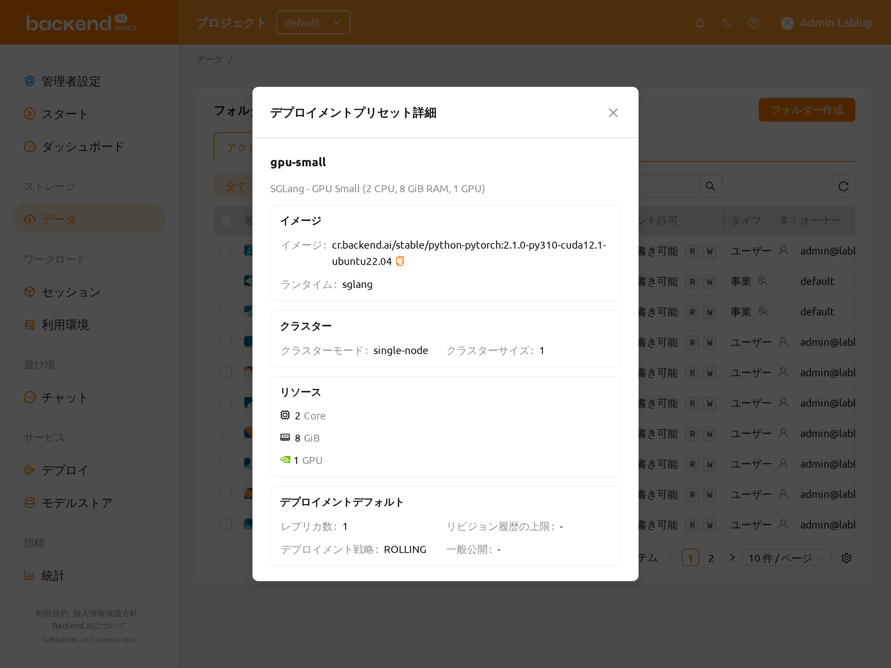
より高度な構成が必要な場合は、デプロイページに移動して手動で新しいデプロイメントを作成します。リビジョン追加モーダルでは プリセットモード（Preset Mode） と 高度モード（Advanced Mode） を選択できます。高度モード を選択すると、すべてのフィールドがプリセットの値で事前入力されたデプロイランチャーが開き、確定前に各値を確認・調整できます。
リソースポリシー管理#
キーペアリソースポリシー#
Backend.AIでは、管理者は各キーペア、ユーザー、プロジェクトに対して利用可能な総リソースに 制限を設定できます。リソースポリシーを使用すると、許可される最大リソースやその他 コンピュートセッション関連の設定を定義できます。さらに、ユーザーや研究要件など、 さまざまなニーズに応じて複数のリソースポリシーを作成し、個別に適用することも可能です。
リソースポリシーページでは、管理者は登録されているすべてのリソースポリシーのリストを 表示できます。管理者は、キーペア、ユーザー、プロジェクトに対して設定されたリソース ポリシーをこのページで直接確認できます。まずキーペアのリソースポリシーを見ていきます。 無限大の記号 （∞）は、該当するリソースに対して制限が適用されていないことを示します。
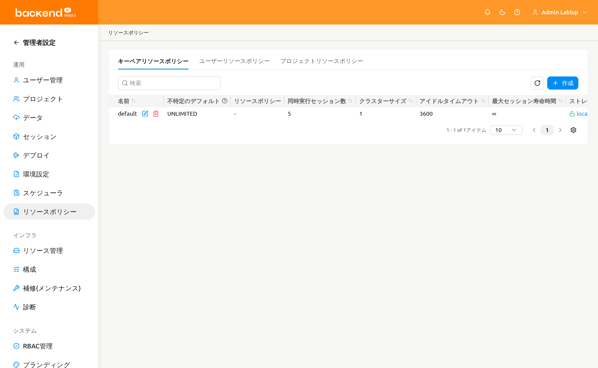
本ガイドで使用しているユーザーアカウントは、現在defaultリソースポリシーに割り当てられて います。これはユーザー管理ページの資格情報タブで確認できます。また、リソースポリシー パネルですべてのリソースポリシーがdefaultに設定されていることも確認できます。
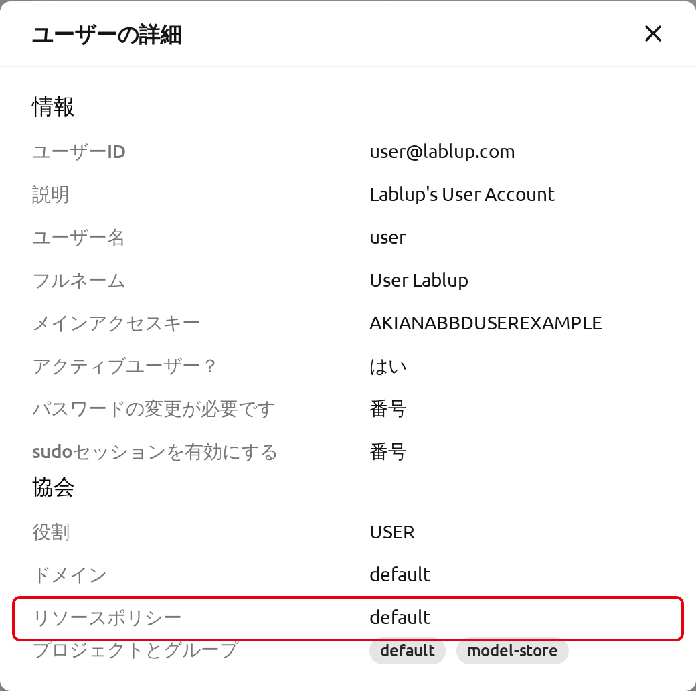
キーペアリソースポリシーのテーブルには次の列が表示されます。そのうち2つは、制限値ではなくポリシーの適用方法を 示します。
- 名前: ポリシー名です。このセルではインラインの 情報、編集、削除 アクションも利用できます。
- 不特定のデフォルト: セッションが CPU やメモリを明示的に要求しなかった場合のポリシーの動作です。
UNLIMITEDはエージェントノードの容量まで使用を許可し、LIMITEDは明示的に指定しない限りリソースを割り当てません。 多くの場合UNLIMITEDを推奨します。列見出しの疑問符アイコンにマウスを重ねると、UI でも同じ説明を確認できます。 - リソースポリシー: ポリシーが許可するリソーススロットです。
- 同時実行セッション数、クラスターサイズ、アイドルタイムアウト、セッション寿命、ストレージノード、 最大ペンディングセッション数、最大同時SFTPセッション数: 以下で説明する個別の制限値です。
- 最大保留中のセッションリソーススロット:
PENDING状態で待機しているセッションにポリシーが許可する リソーススロットで、リソース種類ごとに表示されます（無制限の場合は∞）。この列は WebUI では表示専用で、 リソースポリシーのダイアログには該当項目がありません。 - 作成日: ポリシーが作成された日時です。
テーブルのプロパティフィルター、並べ替え、ページャを使って必要なポリシーを探せます。
リソースポリシーを変更するには、対象ポリシーの名前列にある 編集（鉛筆）アクションをクリックします。キーペアリソースポリシーの更新 ダイアログでは、リソース ポリシーを一覧で識別するための主キーとして機能する「ポリシー名」を除き、すべての オプションが編集可能です。CPU、RAM、fGPUの下部にある無制限チェックボックスをオフにし、 リソース制限を希望する値に設定します。割り当てるリソースが総ハードウェア容量を 超えないようにしてください。ここでは、CPU、RAM、fGPUをそれぞれ2、4、1に設定します。 保存をクリックして、変更したリソースポリシーを適用します。
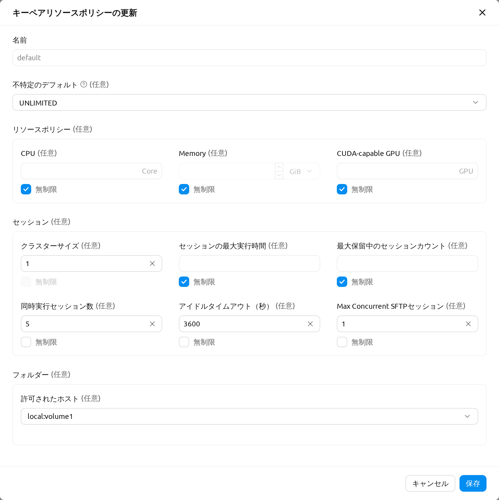
リソースポリシーダイアログの各オプションの詳細については、以下の説明を参照してください。
リソースポリシー
- CPU: 最大CPUコア数を指定します。（最大値: 512）
- メモリ: 最大メモリ量をGB単位で指定します。メモリはGPUメモリの最大値の2倍に設定 することを推奨します。（最大値: 1024）
- CUDA対応GPU: 物理GPUの最大数を指定します。サーバーでフラクショナルGPUが有効化 されている場合、この設定は効果がありません。（最大値: 64）
- CUDA対応GPU（フラクショナル）: フラクショナルGPU（fGPU）は、GPUを効率的に使用する ために、1つのGPUを複数のパーティションに分割するものです。必要なfGPUの最小量は イメージごとに異なる点に注意してください。サーバーでフラクショナルGPUが有効化 されていない場合、この設定は効果がありません。（最大値: 256）
セッション
- クラスターサイズ: セッション作成時に構成できるマルチコンテナまたはマルチノードの 最大数を設定します。
- セッション寿命（秒）:
PENDINGおよびRUNNINGステータスを含む、アクティブ状態 での予約からのコンピュートセッションの最大寿命を制限します。この時間を過ぎると、 セッションが完全に利用されている場合でも強制終了されます。セッションが無期限に 実行されるのを防ぐのに役立ちます。 - 最大ペンディングセッション数: 同時に
PENDINGステータスになることができる コンピュートセッションの最大数です。 - 同時実行セッション数: キーペアごとの同時実行コンピュートセッションの最大数です。 例えば、この値を3に設定すると、このリソースポリシーに紐づけられたユーザーは、 同時に3つを超えるコンピュートセッションを作成できません。（最大値: 100）
- アイドルタイムアウト（秒）: ユーザーがセッションを放置できる期間を設定します。 アイドルタイムアウトの間、コンピュートセッションに一切のアクティビティがない場合、 セッションは自動的にガベージコレクションされ破棄されます。「アイドル」の基準は さまざまで、管理者によって設定されます。（最大値: 15552000（約180日））
- 最大同時SFTPセッション数: 同時に実行できるSFTPセッションの最大数です。
フォルダ
- 許可ホスト: Backend.AIは複数のNFSマウントポイントをサポートします。このフィールドは それらへのアクセスを制限します。"data-1"という名前のNFSがBackend.AIにマウント されていても、リソースポリシーで許可されていなければユーザーはアクセスできません。
- （非推奨）最大数: 作成または招待できるストレージフォルダの最大数です。 （最大値: 100）
キーペアリソースポリシーリストで、defaultポリシーの「リソース」の値が更新されたことを 確認します。
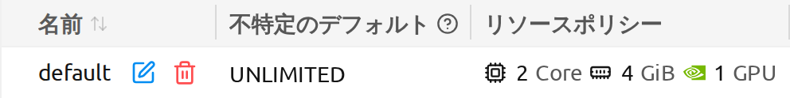
テーブルの右上にある 作成 ボタンをクリックして新しいリソースポリシーを作成できます。各設定値は上記の 説明と同じです。
リソースポリシーを作成してキーペアに関連付けるには、ユーザー管理ページの資格情報タブに 移動し、対象キーペアの名前列にある 編集（鉛筆）アクションをクリックして、「ポリシーを選択」 フィールドをクリックして選択します。
特定のユーザーのキーペアリソースポリシーを選択する際、選択テーブルには各ポリシーに 現在どのユーザーのキーペアが紐付けられているかを示す割り当てられたキーペアカラムが 含まれており、ポリシーを選択する前にユーザーの既存の割り当て状況を確認できます。
名前列のゴミ箱アイコンをクリックして、各リソースキーペアを削除することも できます。アイコンをクリックすると、確認ダイアログが表示されます。確認用の入力欄にポリシー名を 入力してから「削除」ボタンをクリックすると削除されます。
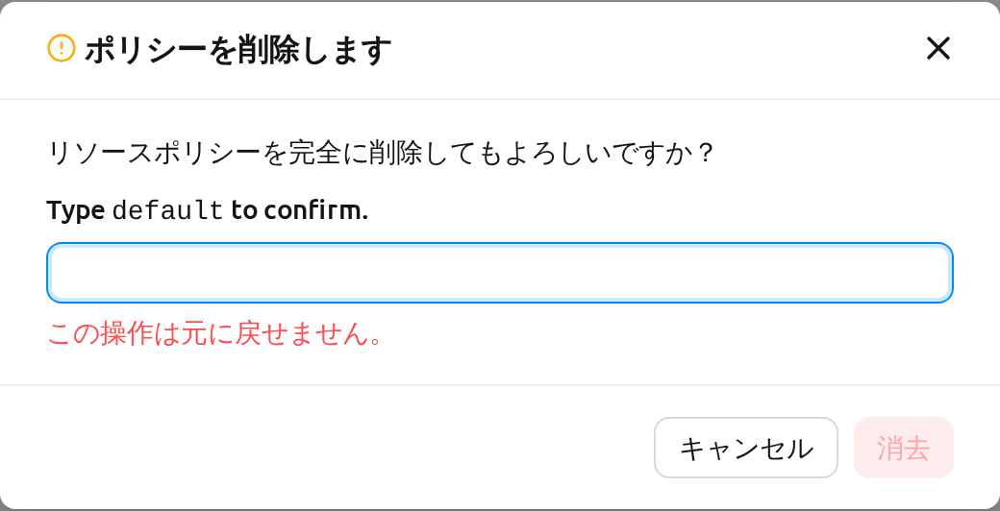
削除予定のリソースポリシーに従うユーザー（非アクティブなユーザーを含む）が存在する場合、 削除が行えない場合があります。リソースポリシーを削除する前に、そのリソースポリシーに 紐づくユーザーが残っていないことを確認してください。
特定のカラムを表示または非表示にしたい場合は、テーブルの右下にある「設定（歯車）」を クリックします。表示したいカラムを選択するダイアログが表示されます。
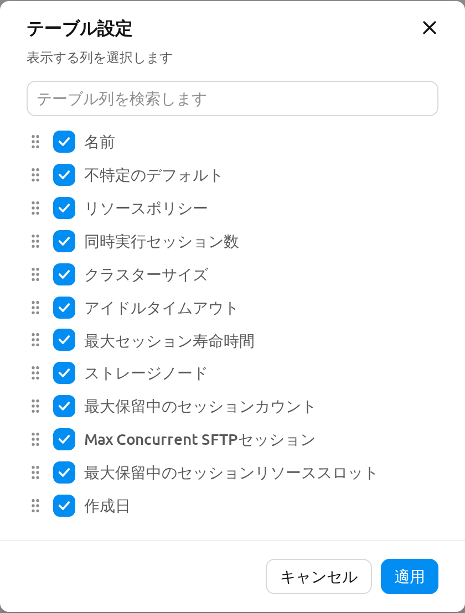
ユーザーリソースポリシー#
Backend.AIはユーザーリソースポリシーの管理をサポートしています。 各ユーザーは複数のキーペアを持つことができますが、ユーザーリソースポリシーは1つしか 持つことができません。ユーザーリソースポリシーページでは、「最大フォルダ数」や 「最大フォルダサイズ」などフォルダ関連のさまざまな設定、および「モデルセッションあたりの 最大セッション数」や「最大カスタマイズイメージ数」などの個別のリソース制限を設定できます。
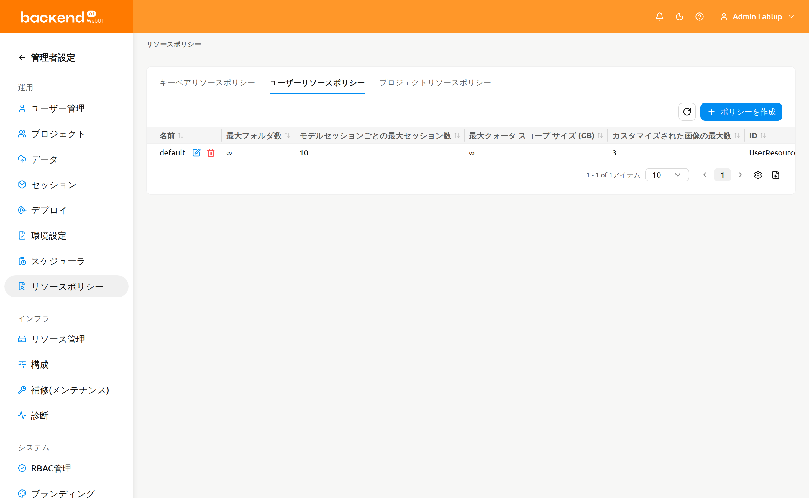
テーブルには ID、名前（インラインの 編集 と 削除 アクション付き）、最大フォルダ数、 最大クォータ スコープ サイズ、カスタマイズされた画像の最大数、作成日 の各列が表示されます。 列設定コントロールで不要な列を非表示にでき、選択した設定はブラウザごとに保持されます。
並べ替えとページ送りはすべてサーバー側で処理されるため、ポリシー数の多いクラスターでもタブは 軽快に動作します。列見出しをクリックして並び順を変更し、テーブル下部のページャで結果を移動できます。
新しいユーザーリソースポリシーを作成するには、作成 ボタンをクリックします。
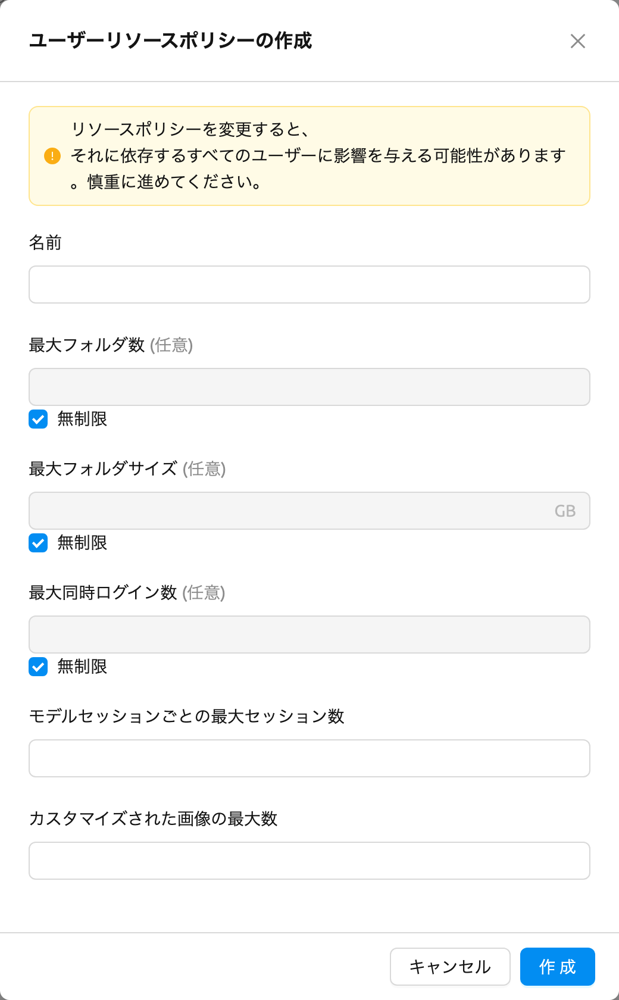
- 名前: ユーザーリソースポリシーの名前です。
- 最大フォルダ数: ユーザーが作成できるフォルダの最大数です。ユーザーのフォルダ数が この値を超えると、ユーザーは新しいフォルダを作成できません。Unlimitedに設定すると 「∞」と表示されます。
- 最大フォルダサイズ: ユーザーのストレージ容量の上限です。ユーザーのストレージ容量が この値を超えると、ユーザーは新しいストレージフォルダを作成できません。Unlimitedに設定 すると「∞」と表示されます。一覧ではこの制限が 最大クォータ スコープ サイズ 列に、 設定値に応じた単位で表示されます。
- 最大同時ログイン数: ユーザーが同時にログインできるセッションの最大数です。Unlimitedに設定 すると「∞」と表示されます。
- モデルセッションあたりの最大セッション数: ユーザーが作成したモデルサービスごとに 利用可能なセッションの最大数です。この値を増やすとセッションスケジューラに高い負荷が かかり、システムダウンタイムを引き起こす可能性があるため、この設定を調整する際は ご注意ください。
- 最大カスタマイズイメージ数: ユーザーが作成できるカスタマイズイメージの最大数です。 ユーザーのカスタマイズイメージ数がこの値を超えると、ユーザーは新しいカスタマイズ イメージを作成できません。カスタマイズイメージの詳細については、マイ環境 セクションを参照してください。
既存のポリシーを変更するには、名前列の 編集（鉛筆）アクションをクリックします。ダイアログのタイトルは ユーザーリソースポリシーの更新 で、送信ボタンは 保存 です。削除するには、削除（ゴミ箱） アクションをクリックします。
リソースポリシーを変更すると、そのポリシーを使用するすべてのユーザーに影響する可能性が あるため、注意して使用してください。
キーペアリソースポリシーと同様に、テーブルの右下にある「設定（歯車）」ボタンをクリック することで、ユーザーが希望するカラムのみを選択して表示できます。
プロジェクトリソースポリシー#
Backend.AIはプロジェクトリソースポリシーの管理をサポートしています。プロジェクトリソースポリシーは、プロジェクトのストレージ容量（クォータ）やフォルダ関連の制限を管理します。
「リソースポリシー」ページの「プロジェクト」タブをクリックすると、プロジェクトリソースポリシーのリストが表示されます。
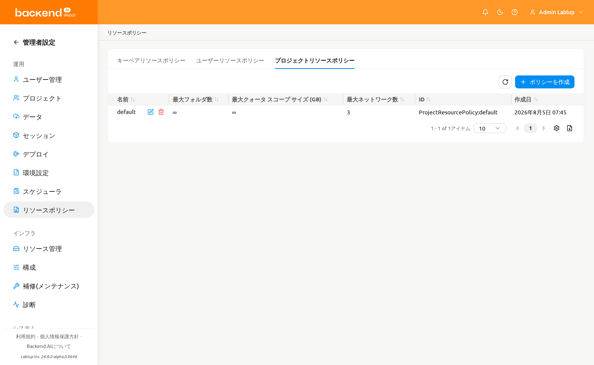
プロジェクトリソースポリシーのテーブルでは、ポリシー一覧を確認しながら、各項目のインライン 編集 と 削除 アクションを利用できます。さらに、テーブルのプロパティフィルター、並べ替え、ページャで必要な ポリシーをすばやく探せます。
新しいプロジェクトリソースポリシーを作成するには、テーブルの右上にある 作成 ボタンをクリックします。
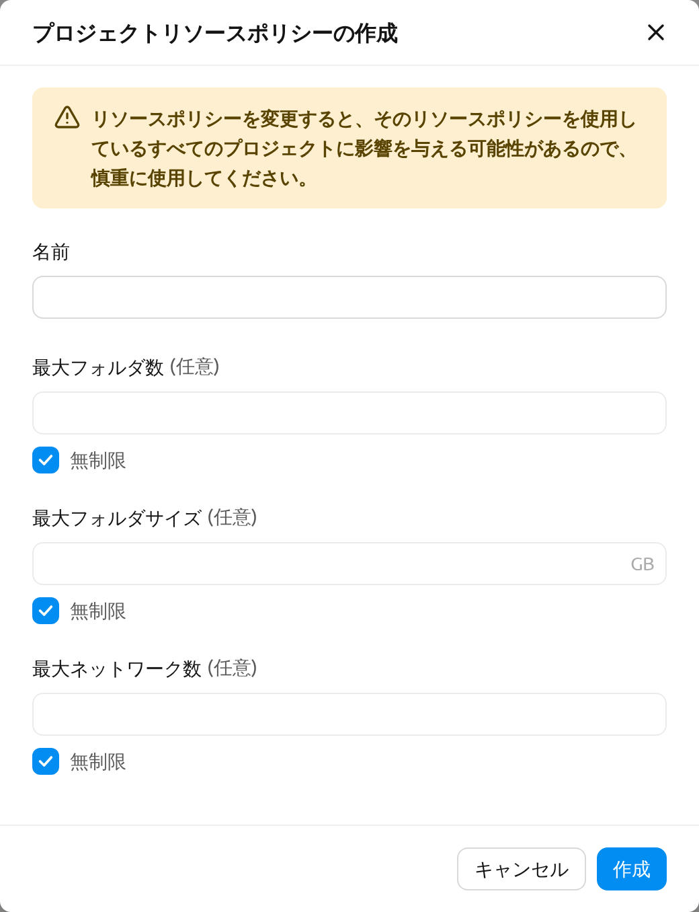
- 名前: プロジェクトリソースポリシーの名前。
- 最大フォルダ数: 管理者が作成できるプロジェクトフォルダの最大数。プロジェクトフォルダ数がこの値を超えると、管理者は新しいプロジェクトフォルダを作成できません。Unlimitedに設定すると「∞」と表示されます。
- 最大フォルダサイズ: プロジェクトのストレージ容量の上限。プロジェクトのストレージ容量がこの値を超えると、管理者は新しいプロジェクトフォルダを作成できません。Unlimitedに設定すると「∞」と表示されます。
- 最大ネットワーク数: プロジェクトに作成できるネットワークの最大数。Unlimitedに設定すると「∞」と表示されます。
各フィールドの意味はユーザーリソースポリシーと類似しています。違いは、プロジェクトリソースポリシーがプロジェクトフォルダに適用され、ユーザーリソースポリシーがユーザーフォルダに適用される点です。
変更するには、名前列の 編集（鉛筆）アクションをクリックします。ダイアログのタイトルは プロジェクトリソースポリシーの更新 で、送信ボタンは 保存 です。リソースポリシー名は編集できません。削除は 削除（ゴミ箱）アクションをクリックして行えます。
リソースポリシーの変更はそのポリシーを使用するすべてのユーザーに影響を与える可能性があるため、慎重に使用してください。
テーブルの右下にある「設定」ボタンをクリックして、表示するカラムのみを選択できます。
ペンディングセッションの統合ビュー#
Admin Sessionページには2つのタブがあります。セッション タブはクラスター内のすべてのコンピュートセッションを 表示し、ペンディングセッション タブでは選択したリソースグループ内のすべてのペンディングセッションを 一覧で確認できます。ステータスの横に表示されるインデックス番号は、十分なリソースが 確保された際にセッションが作成されるキューの位置を示しています。
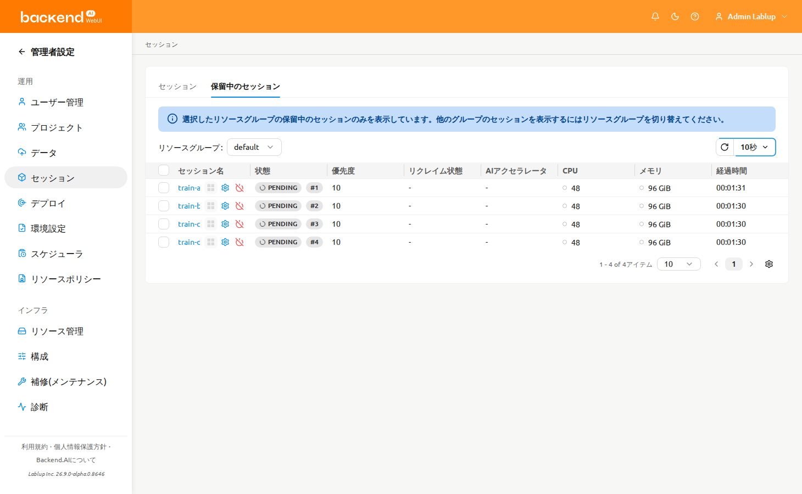
セッションページと同様に、セッション名をクリックすると、セッションの詳細情報を 表示するドロワーが開きます。
ペンディングセッションの一覧には各セッションの 優先度 も表示され、この値がキューの順序を決定します。優先度を
変更するには、セッション行の 設定（歯車）アクションをクリックするか、チェックボックスでペンディングセッションを
1つ以上選択して一覧の上にある 設定 ボタンをクリックします。いずれの場合も セッション設定 ダイアログが開くので、
優先度 を0から100の間の値に設定して 保存 をクリックします。変更が完了すると、セッションの優先度が正常に
更新されたというメッセージが表示されます。優先度はセッションが PENDING 状態の間のみ変更できます。
優先度 列と優先度の編集アクションは、Backend.AI Managerのバージョンが26.4.0以降の場合にのみ表示されます。
セッション タブのプロパティフィルターでは、次の条件を利用できます。
- プロジェクト: このクラスターのプロジェクトを検索できるドロップダウンから選択します。一覧から選ぶ方式のため 識別子を調べる必要はなく、作成されたフィルタータグにはプロジェクト名が表示されます。
- セッション名、リソースグループ、エージェント、所有者のメールアドレス: テキスト一致で一覧を絞り込みます。
ユーザー設定で実験的機能の Session resource grid view を有効にすると（実験的特徴 セクションを参照）、セッション タブの更新ボタンの横に、Table と Grid を切り替える View mode コントロールが表示されます。グリッドはセッションごとに1つのセルを表示し、各セルはそのセッションのリアルタイムな リソース使用率に応じて色分けされます。グリッド自体のコントロールについては、 セッションリストの表示 セクションを参照してください。
フェアシェアスケジューラ#
フェアシェアスケジューラページは管理者設定メニューから利用可能です。この機能により、 管理者はリソースグループ、ドメイン、プロジェクト、ユーザーの階層構造に基づいて フェアシェアスケジューリングの重みを管理できます。
フェアシェアスケジューリングは、過去の使用パターンに基づいてコンピューティングリソースを 配分し、ユーザー間でリソースが公平に分配されるようにします。過去にリソースの使用が 少なかったユーザーはスケジューリング優先度が高くなり、多く使用したユーザーは優先度が 低くなります。管理者は階層構造の各レベルで重みを調整することで、この動作を 細かく制御できます。
フェアシェアスケジューラは、リソースグループのスケジューラタイプがFAIR_SHAREに
設定されている場合にのみ使用できます。リソースグループのスケジューラタイプの設定に
ついては、リソースグループの管理セクションを参照してください。
この機能にアクセスするには、サイドバーの管理者設定にあるSchedulerメニュー項目を クリックします。ページにはフェアシェア設定タブと4段階のドリルダウンインターフェースが 表示されます。
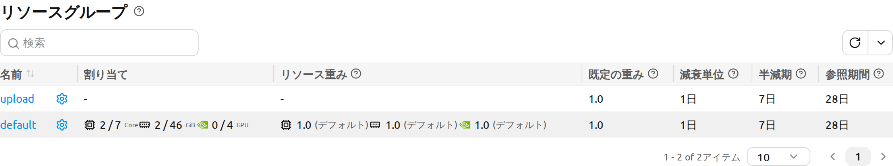
ページは以下の4つの階層的なステップで構成されています：
- リソースグループ: 各リソースグループのフェアシェアの主要パラメータを設定します
- ドメイン: リソースグループ内のドメインごとに重みを設定します
- プロジェクト: ドメイン内のプロジェクトごとに重みを設定します
- ユーザー: プロジェクト内の個々のユーザーに重みを設定します
ページ上部のステップインジケーターバーは、階層構造での現在の位置を表示します。 完了したステップには選択した項目の名前が表示されます。完了したステップをクリックすると そのレベルに戻ることができます。
選択したリソースグループのスケジューラタイプがFAIR_SHAREに設定されていない場合、
そのリソースグループでフェアシェアスケジューラが有効になっていないことを示す警告
アラートが表示されます。
さらに、いま表示している対象がドリルダウンしたリソースグループを実際には利用できない場合にも警告が表示されます。 この判定は、ドリルダウンの途中で選択したドメインやプロジェクトを基準に行われるため、警告は以前の選択ではなく現在の 階層上の位置を反映します。
- ドメイン ステップでは、選択したリソースグループが許可されていないドメインの横に警告アイコンが表示されます。 アイコンにマウスを重ねると、そのリソースグループが配下のプロジェクトでは許可されている可能性がある旨が表示されます。
- プロジェクト ステップでも、選択したリソースグループが許可されていないプロジェクトに同じアイコンが表示されます。
- ユーザー ステップでは、選択したプロジェクトに属するユーザーが選択したリソースグループを利用できない旨の警告が 表示されます。
同じアラートは重み設定モーダル内にも表示されるため、テーブル上だけでなく重みを編集する時点でも不整合を確認できます。
各ステップで以下の共通機能が利用可能です：
- ページネーション: ページサイズを設定して結果をナビゲートできます。
リソースグループ#
リソースグループステップでは、すべてのリソースグループとそのフェアシェア設定がテーブルで 表示されます。
テーブルには以下のカラムが含まれます：
- 名前: リソースグループ名です。名前をクリックすると、そのリソースグループのドメインレベル設定にドリルダウンします。
- 制御: リソースグループのフェアシェア設定モーダルを開く設定（歯車）ボタンです。
- 割り当て: リソースグループに割り当てられた各リソースタイプの使用量/容量を表示します（例：CPU、Memory、CUDA GPU）。
- リソース重み: リソースタイプごとの重みです。デフォルトの重みを使用している場合は「デフォルト」と表示されます。
- 既定の重み: 重みが指定されていないドメイン、プロジェクト、ユーザーに適用されるデフォルト値です。
- 減衰単位: 使用量を集計する期間（日単位）です。
- 半減期: 使用量の反映率が半分になる期間（日単位）です。
- 参照期間: Fair Share計算に反映される利用履歴の範囲（日単位）です。
リソースグループのフェアシェア設定#
リソースグループの制御カラムにある設定（歯車）ボタンをクリックすると、フェアシェア設定 モーダルが開きます。
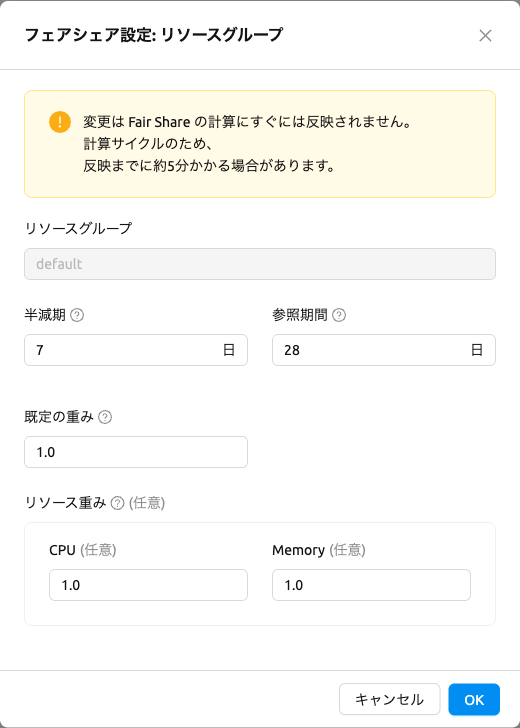
変更はFair Shareの計算にすぐには反映されません。計算サイクルのため、反映までに 約5分かかる場合があります。
モーダルには以下のフィールドが含まれます：
- リソースグループ: リソースグループ名を表示する読み取り専用フィールドです。
- 半減期: 使用量の反映率が半分になる期間で、日数で指定します（最小1）。例えば7日に設定すると、7日前の使用量は50%、14日前の使用量は25%として計算されます。減衰単位の倍数に設定することを推奨します。
- 参照期間: Fair Share計算に反映される利用履歴の範囲で、日数で指定します（最小1）。これより前の利用は計算から除外されます。半減期の倍数に設定することを推奨します。
- 既定の重み: 重みが指定されていないドメイン、プロジェクト、ユーザーに適用されるデフォルト値です（最小1、ステップ0.1）。
- リソース重み: リソースタイプごとの重み（例：CPU、Memory、GPU）で、それぞれ最小値1、ステップ0.1です。このセクションはリソースグループにリソース重みが存在する場合にのみ表示されます。
ドメイン#
リソースグループを選択すると、ドメインステップでそのリソースグループ内のドメインの フェアシェア重みと使用量がテーブルで表示されます。
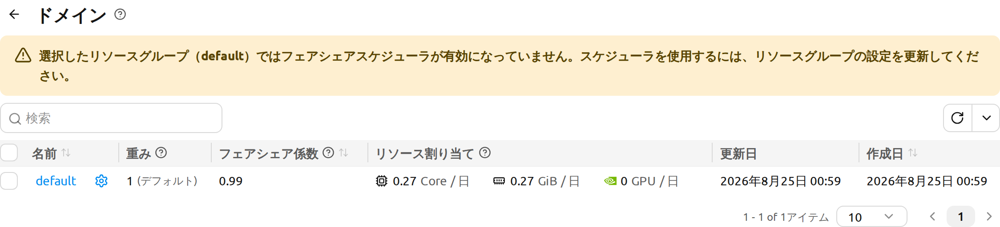
テーブルには以下のカラムが含まれます：
- 名前: ドメイン名です。名前をクリックすると、そのドメインのプロジェクトレベル設定にドリルダウンします。
- 制御: 重み設定モーダルを開く設定（歯車）ボタンです。
- 重み: 現在の重み値です。デフォルトの重みを使用している場合は「デフォルト」と表示されます。
- フェアシェア係数: フェアシェアスケジューラによって算出されたスケジューリング優先度です。値が大きいほど優先度が高くなります。
- リソース割り当て: リソースタイプごとの1日あたりの平均減衰リソース使用量です（CPU、Memory、GPU / Day）。
- 更新日時: 最終更新のタイムスタンプです。
- 作成日時: 作成のタイムスタンプです。
テーブル左側のチェックボックスを使用して複数の行を選択できます。行が選択されると、 2つの追加ボタンが表示されます：
- 利用グラフ（チャートアイコン）：選択した項目の利用履歴モーダルを開きます。
- 一括編集（歯車アイコン）：選択したすべての項目の重みを一括で編集するモーダルを開きます。
プロジェクト#
ドメインを選択すると、プロジェクトステップでドメインステップと同じカラム構造の プロジェクトテーブルが表示されます。プロジェクト名をクリックするとユーザーステップに ドリルダウンします。
行を選択した場合、同じ一括操作（利用グラフおよび一括編集）が利用可能です。
ユーザー#
プロジェクトを選択すると、ユーザーステップで個々のユーザーのフェアシェア重みと 使用量がテーブルで表示されます。
テーブルには以下のカラムが含まれます：
- メール: ユーザーのメールアドレスです。
- 名前: ユーザーの名前です。
- 制御: 重み設定モーダルを開く設定（歯車）ボタンです。
- 重み: 現在の重み値です。デフォルトの重みを使用している場合は「デフォルト」と表示されます。
- フェアシェア係数: フェアシェアスケジューラによって算出されたスケジューリング優先度です。
- リソース割り当て: リソースタイプごとの1日あたりの平均減衰リソース使用量です。
- 更新日時: 最終更新のタイムスタンプです。
- 作成日時: 作成のタイムスタンプです。
行を選択した場合、同じ一括操作（利用グラフおよび一括編集）が利用可能です。
フェアシェア重みの編集#
ドメイン、プロジェクト、またはユーザーのフェアシェア重みを編集するには、対象の行の 制御カラムにある設定（歯車）ボタンをクリックします。重み設定モーダルが開きます。
変更はFair Shareの計算にすぐには反映されません。計算サイクルのため、反映までに 約5分かかる場合があります。
単一編集モードでは、モーダルにエンティティ名（読み取り専用）と重み入力フィールドが 表示されます。
- 重み: Fair Shareスケジューリングの優先度を決定する基本倍率です。値が大きいほど優先度が高くなります。デフォルトは「1.0」です。重み「2.0」は「1.0」の2倍の優先度です。最小値は1、ステップは0.1です。
複数の項目の重みを一括で編集するには、テーブルのチェックボックスで対象の行を選択し、 一括編集（歯車アイコン）ボタンをクリックします。一括編集モードでは、モーダルに選択した すべてのエンティティのタグリストと、すべてに適用される単一の重み入力フィールドが 表示されます。
選択したリソースグループのスケジューラタイプがFAIR_SHAREに設定されていない場合、
モーダルに警告アラートが表示されます。
利用履歴の表示#
ドメイン、プロジェクト、またはユーザーの利用履歴を表示するには、テーブルの チェックボックスで対象の行を選択し、利用グラフ（チャートアイコン）ボタンをクリック します。利用履歴モーダルが開きます。
モーダルには以下が表示されます：
- 日付範囲ピッカー: 利用履歴の日付範囲を選択します。過去7日間、過去30日間、過去90日間のプリセットが利用可能です。
- リフレッシュボタン: 利用データを手動で更新します。
- コンテキスト情報: 現在のステップに応じて、リソースグループ、ドメイン、プロジェクトの情報が表示されます。
- 選択されたエンティティ: 選択した項目の名前がタグとして表示されます。
- 利用チャート: 選択した期間の1日あたりの平均リソース使用量を示すチャートです。
イメージ管理#
管理者は環境設定ページのイメージタブで、コンピュートセッションの作成に使用されるイメージを管理できます。このタブでは、現在Backend.AIサーバーにあるすべてのイメージのメタ情報が表示されます。レジストリ、アーキテクチャ、ネームスペース、イメージ名、ダイジェスト、各イメージに必要な最小リソースなどの情報を確認できます。1つ以上のエージェントノードにダウンロードされたイメージの場合、状態カラムにinstalledタグが表示されます。非公開イメージの場合は、状態カラムに非公開タグも表示されます。非公開イメージはインストール済みであってもセッションランチャーで選択できません。
特定のエージェントを選択してイメージをインストールする機能は現在開発中です。
イメージリストには、より詳細なイメージ情報のための追加カラムが表示されます：
- アーキテクチャ: イメージのCPUアーキテクチャです（例：x86_64、aarch64）。
- 名前空間: レジストリ内のイメージのネームスペースです。
- ベースイメージ名: イメージの基本名で、識別しやすいようにエイリアスタグが表示されます。
- バージョン: イメージのバージョンタグです。
- タグ: イメージに関連する詳細なタグで、エイリアス付きのダブルタグとして表示されます。
未インストールのイメージを複数選択し、イメージをインストール ボタンをクリックすると、一括でインストールできます。 イメージのインストールは、イメージを取得する短時間のセッションをキューに登録することで実行されるため、ダイアログでは そのセッションを実行する場所を指定します。
- インストールセッションのプロジェクト: インストールセッションを実行するプロジェクトです。セッションはこの プロジェクトでユーザー自身のセッションとして作成されるため、所属しているプロジェクトのみが一覧に表示されます。
- 対象リソースグループ: イメージを取得するリソースグループです。選択したプロジェクトからアクセスできる リソースグループのみが一覧に表示されます。
どちらの項目も必須で、プロジェクトとリソースグループを選択するまでダイアログの インストール ボタンは無効のままです。 選択したイメージのうち、すでにインストール済みのイメージはリクエストから除外されます。
コントロールパネルの 編集（鉛筆）アクションをクリックすると 最小画像リソース制限を変更します ダイアログが開き、各イメージの最小リソース要件を 変更できます。各イメージには最小動作のためのハードウェアおよびリソース要件があります （例えば、GPU専用イメージの場合は、GPUが最低限割り当てられる必要があります）。 最小リソース量のデフォルト値は、イメージのメタデータに埋め込まれた形で提供されます。 各イメージで指定されたリソース量より少ないリソースでコンピュートセッションを作成しようと した場合、リクエストはキャンセルされず、イメージの最小リソース要件に自動的に調整されて 作成されます。
イメージメタデータに含まれる最小リソース要件は、テストされ決定された値です。変更したい最小リソース量について明確な理由がない限り、デフォルト値を使用することをお勧めします。
さらに、「コントロール」列にある「Apps」アイコンをクリックすると、各イメージの サポートアプリを追加または変更できます。アイコンをクリックすると、アプリ名とその ポート番号が表示されます。
このインターフェースでは、下部の「追加」ボタンをクリックして、サポートされるカスタム アプリケーションを追加できます。アプリケーションを削除するには、各行の右側にある 「ゴミ箱」ボタンをクリックします。
Dockerレジストリ管理#
環境設定ページのレジストリタブをクリックすると、現在接続されているDocker
レジストリの情報を確認できます。デフォルトでcr.backend.aiが登録されており、これは
Harborが提供するレジストリです。
オフライン環境ではデフォルトのレジストリにアクセスできないため、右側のゴミ箱アイコンを クリックして削除してください。
「コントロール」列の更新アイコンをクリックすると、接続されたレジストリからBackend.AI用の イメージメタデータを更新できます。レジストリに保存されたイメージのうち、Backend.AI用の ラベルを持たないイメージ情報は更新されません。
レジストリを追加する ボタンをクリックして、独自のプライベートDockerレジストリを追加できます。レジストリ作成ダイアログには以下のフィールドが含まれています：
- レジストリ名: レジストリの一意の名前です（最大50文字）。レジストリに保存されたイメージ名のプレフィックスと一致する必要があります。
- レジストリURL: レジストリのURLです。
http://またはhttps://などのスキームを明示的に含める必要があります。 - ユーザー名: オプション。レジストリに別途認証設定がある場合に入力します。
- パスワード: オプション。既存のレジストリを編集する場合、
Change Passwordチェックボックスを選択して変更できます。 - レジストリタイプ: レジストリの種類を選択します。サポートされる種類：
docker、harbor、harbor2、github、gitlab、ecr、ecr-public。 - プロジェクト名: レジストリのプロジェクトまたはネームスペースです（必須）。GitLabレジストリの場合、ネームスペースとプロジェクト名を含む完全なパスを使用します。
- 追加情報: 各レジストリタイプに必要な追加設定用のJSON文字列です。
- SSL検証（SSL Verification）: Backend.AI がレジストリに接続する際に SSL 証明書を検証するかどうかを切り替えます。デフォルトでは有効 で、公開インターネット経由でアクセス可能なレジストリでは有効のままにすることを推奨します。自己署名（self-signed）証明書で配信されるレジストリで、かつネットワーク経路を既に検証済みの信頼できる内部環境でのみ無効化してください。検証を無効にすると中間者（MITM）攻撃に対して脆弱になるため注意が必要です。
- グローバルレジストリとして設定（Set as Global Registry）: 有効にすると、すべてのプロジェクトから当該レジストリへのアクセスを許可するトグルです。
- 許可されたプロジェクト（Allowed Projects）: グローバルレジストリとして設定トグルをオフにした場合、このフィールドで当該レジストリを使用できる特定のプロジェクトを選択します。
GitLab Container Registry設定#
GitLabコンテナレジストリを追加する場合、追加情報フィールドにapi_endpointを指定する必要があります。これはGitLabがコンテナレジストリとGitLab APIで別々のエンドポイントを使用するためです。
GitLab.com（パブリックインスタンス）の場合：
- Registry URL:
https://registry.gitlab.com - Extra Information:
{"api_endpoint": "https://gitlab.com"}
セルフホスト（オンプレミス）GitLabの場合：
- Registry URL: ご使用のGitLabレジストリURL（例：
https://registry.example.com） - Extra Information:
{"api_endpoint": "https://gitlab.example.com"}
api_endpointはGitLabインスタンスのURLを指す必要があり、レジストリURLではありません。
追加の設定に関する注意：
プロジェクトパスの形式: プロジェクトを指定する際は、ネームスペースとプロジェクト名を含む完全なパスを使用してください（例：
namespace/project-name）。レジストリが正しく機能するには両方のコンポーネントが必要です。アクセストークンの権限: レジストリに使用するアクセストークンには
read_registryとread_apiの両方のスコープが必要です。read_apiスコープはBackend.AIが再スキャン操作中にGitLab APIでイメージメタデータをクエリするために必要です。
レジストリの修正 ダイアログで既存のレジストリの設定を変更することもできますが、レジストリ名は変更できません。
レジストリを作成してイメージメタデータを更新した後も、ユーザーはすぐにイメージを使用できるわけではありません。レジストリリストの有効スイッチを切り替えてレジストリを有効にし、ユーザーがレジストリからイメージにアクセスできるようにする必要があります。
リソースプリセットの管理#
以下の事前定義されたリソースプリセットは、コンピュートセッション作成時のリソース割り当てパネルに表示されます。スーパー管理者はこれらのリソースプリセットを管理できます。
環境設定ページのリソースプリセットタブに移動します。現在定義されているリソースプリセットのリストを確認できます。
名前列にある 編集（鉛筆）アクションをクリックして、リソースプリセットが提供するCPU、RAM、fGPUなどのリソースを設定できます。リソースプリセットの作成 / リソースプリセットの変更 モーダルには、現在利用可能なリソースのフィールドが表示されます。サーバーの設定によっては、特定のリソースが表示されない場合があります。希望の値でリソースを設定した後、保存 をクリックして、コンピュートセッション作成時に対応するプリセットが表示されるか確認してください。利用可能なリソースがプリセットで定義されたリソース量より少ない場合、対応するプリセットは表示されません。
リソースプリセットダイアログには以下の項目が含まれます：
- プリセット名: プリセットの一意の名前です（英数字、ピリオド、ハイフン、アンダースコアのみ使用可能）。
- リソースグループ: プリセットを特定のリソースグループに関連付けます。このフィールドは任意です。空のままにするか値をクリアすると、リソースグループに関係なく適用されるグローバルプリセットになります。
- リソースプリセット: 利用可能な各リソースタイプ（CPU、メモリ、GPUなど）を入力する動的フィールドのまとまりです。メモリフィールドは動的な単位入力（MiB、GiB、TiB、PiB）をサポートしています。
- 共有メモリ: プリセットに割り当てられた共有メモリの量です。この値はメモリの値より少なくなければなりません。
「リソースプリセット」タブの右上にある プリセットの作成 ボタンをクリックしてリソースプリセットを作成することもできます。リソースプリセット名は引き続き一意である必要があります。既に存在する名前を入力すると、作成 をクリックした際にサーバーがリクエストを拒否し、エラーメッセージが表示されます。
エージェントノードの管理#
スーパー管理者は、リソース管理ページにアクセスして、現在Backend.AIに接続されているエージェントノードのリストを表示できます。エージェントノードのIP、接続時間、現在実際に使用中のリソースなどを確認できます。エージェントの詳細ドロワーからは、スケジュール可能ステータスの変更やエージェントサービス自体の制御も行えます。
エージェントノードの照会#
接続済み / 終了しました のセレクターで、現在接続されているエージェントと、一度接続されてから終了または 切断されたエージェントを切り替えて表示できます。終了しましたの一覧はノード管理の参考資料として使用でき、リストが 空の場合は切断や終了が発生していないことを意味します。
プロパティフィルターでは ID、エンドポイント、スケジュール可能 の条件で一覧を絞り込めます。
エージェントのIDをクリックすると、そのノードの正確なリソース使用状況を表示する エージェント情報 ドロワーが 開きます。このドロワーには2つのタブがあります。リソース タブはリソーススロットごとの使用状況を表示し、 セッション タブはそのエージェントに割り当てられているコンピュートセッションを一覧表示するため、エージェントを 停止または再起動する前にノードで何が実行されているかを確認できます。セッション タブでは、 実行中 / 終了セッション のセレクターで、まだノードのリソースを占有しているセッションと、すでに終了した セッションを切り替えて表示でき、セッション名をクリックすると管理者用セッションページでそのセッションの詳細が開きます。
エージェントの起動・停止・再起動#
エージェント情報ドロワーには、エージェントサービス自体を制御するボタン群があります。
- エージェントを起動: エージェントサービスを起動し直します。エージェントが
ALIVEでないときのみ利用できます。 - エージェントを停止: エージェントサービスを停止します。エージェントが
ALIVEのときのみ利用できます。 - エージェントを再起動: エージェントサービスを再起動します。
いずれの操作でも、対象のエージェントを明示し、このエージェントで実行中のセッションに影響する場合がある旨を警告する 確認ダイアログが開きます。確認すると要求が送信され、起動・停止・再起動が要求された旨のメッセージが表示された後、 エージェントの状態が読み直されます。
これらの操作は個々のセッションではなく、ノード上のエージェントサービスに対して行われます。エージェントを停止または 再起動すると、そのエージェントで実行中のすべてのコンピュートセッションが影響を受けます。ノードを空にしたか、 その影響を許容できるかを確認してから実行してください。
要求はエージェントの watcher デーモンへ中継されます。watcher に接続できない場合や、その操作に対応しない方法で ノードが管理されている場合は、成功メッセージの代わりにエージェントが返した失敗内容が WebUI に表示されます。
エージェントノードのスケジュール可能ステータスの設定#
エージェントサービスを停止せずに新しいコンピュートセッションがスケジュールされることを防止したい場合があります。その場合、エージェント情報ドロワーの 設定 ボタンからエージェントのSchedulableステータスを無効にできます。これにより、エージェント上の既存のセッションを保持しながら、新しいセッションの作成をブロックできます。
リソースグループの管理#
エージェントはリソースグループと呼ばれる単位にグループ化できます。例えば、V100 GPUを搭載したエージェント3台とP100 GPUを搭載したエージェント2台がある場合、2種類のGPUをユーザーに別々に公開するには、V100エージェント3台を1つのリソースグループに、残りのP100エージェント2台を別のリソースグループにグループ化できます。
特定のエージェントを特定のリソースグループに追加する操作は、現在WebUIでは処理されていません。インストール場所からエージェントのconfigファイルを編集し、エージェントデーモンを再起動して行えます。リソースグループの管理は、リソース管理ページのリソースグループタブで可能です。
名前列の 編集（鉛筆）アクションをクリックすると リソースグループの変更 ダイアログが開き、リソースグループを編集できます。スケジューラー フィールドで、コンピュートセッション作成のスケジューリング方法を選択できます。現在、FIFO、LIFO、DRF、FAIR_SHAREの4種類があります。FIFOとLIFOはジョブキューで最初または最後にキューイングされたコンピュートセッションを作成するスケジューリング方法です。DRFはDominant Resource Fairnessの略で、各ユーザーにできるだけ公平にリソースを提供することを目指します。FAIR_SHAREは過去の使用パターンに基づいてコンピュートリソースを割り当てます。詳細については、フェアシェアスケジューラセクションを参照してください。アクティブ をオフにすることでリソースグループを無効化できます。保存 をクリックすると変更が適用されます。
リソースグループ編集ダイアログには以下の追加フィールドが含まれています：
- 許可されたセッションタイプ: ユーザーがセッションタイプを選択できるため、リソースグループで特定のタイプを許可できます。少なくとも1つのセッションタイプを許可する必要があります。許可されるセッションタイプは Interactive、Batch、Inference、System です。
- App Proxy サーバアドレス: リソースグループのエージェントが使用するApp Proxyアドレスを設定します。このフィールドにURLを設定すると、App ProxyがJupyterなどのアプリのトラフィックをManagerをバイパスしてエージェント経由でコンピュートセッションに直接中継します。
- App Proxy APIトークン: App Proxyサーバーとの認証用APIトークンです。
- SFTPストレージプロキシ: このリソースグループのユーザーがSFTPでフォルダーにファイルを転送するときに使用する ストレージプロキシです。このフィールドはスーパー管理者に提供され、現在このリソースグループを担当している プロキシがあらかじめ入力されます。保存すると、このリソースグループの所属だけが同期されます。つまり新たに選んだ プロキシには追加され、外したプロキシからは削除されますが、それらのプロキシ上の他のリソースグループはそのまま 維持されます。プロキシを1つも選ばない場合、そのリソースグループは特定のプロキシに限定されません。
- アクティブ: リソースグループの有効/無効を切り替えます。
- 公開: 有効にすると、リソースグループがすべてのユーザーに表示されます。
- 保留中のタイムアウト: コンピュートセッションが保留中のタイムアウトより長く
PENDING状態を維持すると取り消されます。この値をゼロ（0）に設定すると、この機能は適用されません。 - 保留中セッションをスキップする再試行回数: スケジューラがPENDINGセッションをスキップする前に試行する回数です。
リソースグループの作成 ボタンをクリックして新しいリソースグループを作成できます。他の作成オプションと同様に、既に存在する名前ではリソースグループを作成できません。名前はキー値です。
複数のリソースグループをまとめて編集する#
複数のリソースグループに同じように適用される設定は、一度にまとめて変更できます。
- 行チェックボックスでリソースグループを選択します。（チェックボックスはスーパー管理者に提供されます。）
- ツールバーに選択件数が表示されます。その横の 一括編集（歯車）ボタンをクリックします。
- リソースグループを更新 ダイアログが開きます。
ダイアログ上部のアラートには、変更対象となるすべてのリソースグループが並びます。その下には SFTPストレージプロキシ フィールドがあり、選択したリソースグループのいずれかが既に利用しているプロキシが すべてあらかじめ入力されます。
- プロキシを選択すると、選択した すべての リソースグループがそのプロキシに登録されます。
- プロキシを外すと、選択したリソースグループがそのプロキシから削除されます。SFTPアクセスが失われる変更のため、 対象のプロキシを明示したうえで適用前に確認が求められます。
いずれの場合も、選択しなかったリソースグループのプロキシ設定はそのまま維持されます。
ストレージ#
ストレージタブでは、どのようなマウントボリューム（通常はNFS）が存在するかを確認できます。 Backend.AIは、クォータ管理をサポートするストレージに対してユーザーごと/ プロジェクトごとのクォータ設定を提供しています。この機能を使用すると、管理者は ユーザーおよびプロジェクト単位のフォルダのストレージ使用量を簡単に管理およびモニター できます。
ストレージホストを管理するには、ストレージ一覧でストレージホスト名をクリックします。 すると、容量（クォータ）とフォルダ権限を構成するストレージホスト詳細Drawerが 開きます。
ストレージホスト詳細Drawer#
ストレージホスト詳細Drawerは、ストレージホストを確認し管理するための単一の場所です。 ストレージ一覧でホスト名をクリックすると開きます。上部にはホストの基本情報が表示され、 下部にはフォルダ権限と容量（クォータ）を構成するためのタブが用意されています。
Drawerには次のタブがあります。
- プロジェクトフォルダーの権限 (Project Folder Permissions): どのドメインとプロジェクトが ホストのプロジェクトフォルダにアクセスできるかを確認し管理します。以下の プロジェクトフォルダの権限セクションを参照してください。
- ユーザーフォルダーの権限 (User Folder Permissions): ホストのユーザーフォルダに適用される 権限を確認し管理します。ユーザーフォルダの権限は、ユーザーのメインアクセスキーに紐付く キーペアリソースポリシーによって決定されます。
- Capacity: ユーザーごと・プロジェクトごとのストレージクォータを構成し、ホストの使用量と 機能を確認します。クォータ設定をサポートしていないストレージホストでは、このタブは利用できません。
プロジェクトフォルダの権限#
ストレージホスト詳細Drawerの プロジェクトフォルダの権限 タブで、管理者は選択したストレージホスト上に作成されたプロジェクトフォルダの権限を確認・管理できます。
プロジェクトフォルダの権限は、選択したドメインに対する権限と、そのドメインに属するプロジェクトに対する権限で構成されます。
Backend.AIの構造では、プロジェクトは特定のドメインの配下に属します。そのため、プロジェクトに設定されるストレージ権限は、デフォルトでドメインの権限を継承します。
Domains、Projects、またはユーザーフォルダーの権限テーブルで、行のチェックボックスを使って複数の行を選択すると、権限セットを並べて比較できます。行を選択した状態で 権限の編集 をクリックすると一括編集モーダルが開き、選択した権限セットを選択したすべての対象に一度に適用します。このモーダルはデフォルトですべての権限が選択された状態で開き、保存すると選択した対象の権限が、選択したセットで正確に上書きされます。
ユーザーフォルダーの権限#
ユーザーフォルダ権限は、キーペアリソースポリシーに設定される権限です。特定のユーザーに絞り込むには、テーブル上部のフィルターバーに ユーザー 条件を追加します。値の入力欄は自由入力ではなくユーザーアカウントを検索できるドロップダウンなので、アドレスを入力する代わりにアカウントを選択します。すると、そのユーザーのキーペアに割り当てられたキーペアリソースポリシーのみが表示され、作成されたフィルタータグにはユーザーのメールアドレスが表示されます。割り当てられたキーペアカラムでそのユーザーのメインアクセスキーを確認でき、この列はユーザーを選択している間のみ表示されます。別のユーザーを選び直すと、条件は追加されずに置き換えられます。
クォータ設定#
クォータ設定はクォータ設定を提供するストレージ（例：XFS、CephFS、NetApp、Purestorage など）でのみ利用可能である点にご注意ください。ストレージの種類に関係なくCapacityタブで ストレージの使用量を確認できますが、内部的にクォータ設定をサポートしていない ストレージにはクォータを設定できません。
ユーザークォータの設定#
Backend.AIには、ユーザーが作成するvfolderと管理者が作成するvfolder（プロジェクト）の
2種類があります。このセクションでは、ユーザーごとの現在のクォータ設定を確認する方法と、
その設定方法を示します。まず、CapacityタブでQuota Settingsパネルのアクティブなサブタブが
For Userであることを確認してください。次に、クォータを確認および編集したいユーザーを選択します。すでに
クォータを設定している場合は、ユーザーIDに対応するクォータIDと、すでに設定されている
構成をテーブルで確認できます。
可用量範囲ID列の編集ボタンをクリックすると、クォータ設定を構成できるモーダルが表示されます。
プロジェクトクォータの設定#
プロジェクトフォルダにクォータを設定する方法は、ユーザークォータの設定と似ています。 プロジェクトクォータとユーザークォータの設定の違いは、プロジェクトクォータの設定では、 プロジェクトが依存するドメインを選択するという追加の手順が必要なことです。その他は 同じです。下の画像のように、まずドメインを選択してから、プロジェクトを選択する必要が あります。
クォータの解除#
クォータを解除する機能も提供しています。クォータ設定を削除すると、クォータは自動的に
ユーザーまたはプロジェクトのデフォルトクォータに従う点にご注意ください。デフォルトは
WebUIでは設定できません。デフォルトクォータ設定を変更したい場合は、管理者専用の
ページにアクセスする必要があります。可用量範囲ID列のUnsetボタンをクリックすると、
現在のクォータ設定を本当に削除するかどうかを確認する小さなスナックバーメッセージが
表示されます。スナックバーメッセージで確認ボタンをクリックすると、クォータ設定が削除され、
クォータタイプ（ユーザー/プロジェクト）に応じて対応するクォータに自動的にリセットされます。
ユーザー/プロジェクトごとの設定がない場合は、ユーザー/プロジェクトリソースポリシーの
対応する値がデフォルト値として設定されます。例えば、クォータのハードリミット値が
設定されていない場合、リソースポリシーのmax_vfolder_size値がデフォルト値として
使用されます。
システム設定#
構成ページでBackend.AIサーバーの主要な設定を確認できます。現在、設定を変更および 一覧表示できる複数のコントロールが提供されています。
Digest、Tag、Noneのオプションから1つを選択することで、イメージの自動インストールと
更新ルールを変更できます。Digestはイメージのチェックサムの一種で、イメージの整合性を
検証し、重複するレイヤーを再利用することで、イメージのダウンロード効率を向上させます。
Tagはイメージの整合性を保証しないため、開発用のオプションのみとなります。
各ルールの意味を完全に理解していない場合は、ルールの選択を変更しないでください。
構成ページでは、プラグインとエンタープライズ機能のステータスも表示されます：
プラグイン：
- オープンソース CUDA GPU サポート: CUDA GPUサポートのステータス。
- ROCm GPU サポート: ROCm GPUサポートのステータス。
エンタープライズ機能：
- フラクショナルGPU: セッション間でGPUを共有するためのフラクショナルGPU (fGPU) 仮想化。
Backend.AIは、複数のベンダーにわたる幅広いAIアクセラレータをサポートしています：
- NVIDIA
- Spark (GB10)
- Blackwell (B300、B200、RTX PRO 6000など)
- Hopper (H200、H100 NVLなど)
- Grace Superchip (GB300、GB200、GH200など)
- Turing (Titan RTX、RTX 8000、T4)
- Ampere (A100、A40、A10など)
- Ada Lovelace (L40S、L4)
- Jetson (TX、Xavier、Orin、Thorなど)
- Intel
- Gaudi 3
- Gaudi 2
- Gaudi 1
- Arc
- AMD
- Instinct MIシリーズ (MI300Xを含む)
- MI300A
- MI250
- Rebellions
- ATOM Max
- ATOM+
- REBEL
- FuriosaAI
- RNGD
- Tenstorrent
- Wormhole n150s
- Wormhole n300s
- Google
- TPU v7 (Ironwood)
- Coral TPU v5p
- Coral TPU v5e
- TPU v4
- Graphcore
- C600 IPU
- Bow IPU
- HyperAccel
- LPU
- Groq
- LPU
- Cerebras
- WSE-3
ユーザーがマルチノードクラスターセッションを起動すると、 Backend.AIはプライベートなノード間通信をサポートするためにオーバーレイネットワークを 動的に作成します。管理者は、MTU（Maximum Transmission Unit）の値がネットワーク速度の 向上に確実に寄与する場合、オーバーレイネットワークのMTU値を設定できます。
Backend.AIクラスターセッションの詳細については、 Backend.AIクラスターコンピュートセッション セクションを参照してください。
スケジューラーの設定ボタンをクリックすると、ジョブスケジューラごとの構成を編集できます。 スケジューラ設定の値は、各リソースグループにスケジューラ設定が ない場合に使用されるデフォルト値です。リソースグループ固有の設定がある場合、この値は 無視されます。
現在サポートされているスケジューリング方式は、FIFO、LIFO、DRFです。各スケジューリング
方式は、上記のスケジューリング方式と同じです。スケジューラ
オプションにはセッション作成再試行が含まれます。セッション作成再試行とは、セッション
作成に失敗した場合の再試行回数を指します。試行回数内にセッションを作成できない場合、
リクエストは無視され、Backend.AIは次のリクエストを処理します。現在、変更が可能なのは
スケジューラがFIFOの場合のみです。
今後も、より広範な設定コントロールを追加していきます。
システム設定はデフォルト設定です。リソースグループに特定の値がある場合、システム設定で 構成された値はそれによって上書きされます。
サーバー管理#
補修(メンテナンス)ページに移動すると、目的別にまとめられたサーバー管理項目が表示されます。ページ上部の検索バーで 目的の項目を素早く絞り込めます。
修正
- 使用状況データベースを現在の状態と照合する: ネットワーク接続が不安定な場合やDockerデーモンのコンテナ管理に 問題がある場合、Backend.AIが占有しているリソースとコンテナが実際に使用しているリソースが 一致しないことがあります。その場合、使用量を再計算する をクリックすることで、 リソースの占有状況を手動で修正できます。
画像/環境
- リポジトリから画像リストを再スキャンします: 画像を再スキャンする をクリックすると、登録されているすべての Dockerレジストリからイメージのメタ情報を更新します。Backend.AIに接続されたDockerレジストリに新しいイメージが プッシュされた場合に使用できます。スキャンには時間がかかる場合があり、進行状況は通知領域に表示されます。
お知らせ
- システムのお知らせ: 発表を編集 をクリックすると、すべてのユーザーにすべてのページの上部で表示されるお知らせ バナーを作成または変更できます。下記のシステムのお知らせセクションを参照してください。
未使用のイメージの削除や定期メンテナンススケジュールの登録など、管理に必要な その他の設定も継続的に追加していきます。
システムのお知らせ#
スーパー管理者は、予定されているメンテナンスの案内などの短いメッセージを、すべてのユーザーにすべてのページの上部の バナーとして表示できます。お知らせはマークダウンで記述し、これまでに公開したものがあるかどうかにかかわらず、すべて WebUI から管理できます。
エディターは次の2つの方法で開けます。
- 補修ページの システムのお知らせ 行にある 発表を編集 をクリックします。お知らせがまだない場合でも利用できる ため、最初のお知らせを公開するときはこの方法を使います。
- すでに公開済みのお知らせがある場合は、お知らせバナーから直接開きます。バナーはすべてのページの上部に表示されるため、 スーパー管理者は WebUI のどの画面からでもエディターを開けます。
発表を編集 ダイアログは2つの領域に分かれています。
- メッセージ: 書式ツールバー付きのマークダウンエディターです。ツールバーでは見出し（H1〜H3）、太字、斜体、 取り消し線、引用、コード、リンク、画像、箇条書きリスト、番号付きリストを利用できます。各ボタンは現在の選択範囲に 適用され、選択範囲がない場合はそのまま上書き入力できるプレースホルダーを挿入します。
- プレビュー: ユーザーに見えるとおりにメッセージをリアルタイムで表示します。
フッターには3つの操作があります。
- 公開: メッセージを保存し、すべてのユーザーにバナーを表示します。メッセージが空のままではお知らせを有効に できないため、ボタンは無効のままです。
- キャンセル: 保存せずにダイアログを閉じます。
- 削除: 公開中のお知らせを削除し、すべてのユーザーからバナーを消します。先に確認ダイアログが表示されます。 公開中のお知らせがない場合、この操作は利用できません。
詳細情報#
情報ページでは、各機能のいくつかの詳細情報およびステータスを確認できます。 Managerのバージョンおよび API のバージョンを確認するには、Coreパネルをチェックします。 Backend.AIの各コンポーネントに互換性があるかどうかを確認するには、Componentパネルを チェックします。
このページは現在の情報を表示する専用のページです。
プロジェクト管理#
スーパー管理者はプロジェクトページでクラスター内のすべてのプロジェクトを確認し、作成、編集、無効化、有効化、 完全削除を行えます。各行には、プロジェクト管理者権限を付与するためのショートカットもあります。
プロジェクト管理者を設定する#
RBAC管理ページでプロジェクトのロールを探さなくても、プロジェクト一覧から直接そのプロジェクトの管理者を管理できます。
- プロジェクト一覧で対象のプロジェクトを見つけます。
- 行の プロジェクト管理者を設定（盾）アクションをクリックします。モデルストアのプロジェクトではこのアクションは 利用できません。
- プロジェクト管理者を設定 ダイアログが開きます。
ダイアログは次の要素で構成されます。
- プロジェクト管理者権限を付与すると、そのプロジェクトがユーザーの許可されたプロジェクトリストに自動的に追加され、 以降そのユーザーがそのプロジェクトにアクセスできるようになる旨の情報アラート。
- 1人以上のアカウントを選べる ユーザーを検索して選択 フィールドと、選択したユーザーにプロジェクト管理者権限を 付与する 追加 ボタン。
- 現在この権限を持つユーザーの一覧テーブル。各ユーザーのメールアドレスとIDが表示され、行末に 管理者権限を無効化 アクションがあります。
変更のたびにダイアログが閉じることはないため、複数のユーザーに対してまとめて付与・解除できます。一部だけ成功した 場合は、失敗したユーザーごとにエラーが報告されます。
プロジェクト管理者権限を解除しても、そのプロジェクトはユーザーの許可されたプロジェクトリストから 自動的には削除されません。プロジェクトへのアクセスも取り消すには、リストから手動で削除してください。 ユーザー一覧の参照と管理セクションを参照してください。
このショートカットの背後にあるロールと権限のモデル、およびRBAC管理ページでの同等の手順については、 プロジェクト管理者権限の付与セクションを参照してください。
RBAC管理#
RBAC（ロールベースアクセス制御）管理では、スーパー管理者がきめ細かい権限を持つロールを定義し、ユーザーに割り当てることができます。Backend.AIシステム全体で特定のユーザーがさまざまなリソースに対して実行できる操作を制御できます。
ロール、権限、ユーザー割り当ての管理の詳細については、RBAC管理ページを参照してください。
診断#
スーパー管理者は、管理者サイドバーから 診断 ページを開いて、WebUI デプロイメントに対する自動状態チェックを実行できます。このページはブラウザーとサーバー間の構成を評価し、誤った設定を報告することで、接続またはセキュリティの問題がユーザーに影響を与える前に把握できるようにします。
ページ上部のツールバーには、次のコントロールがあります。
- 失敗した項目のみ表示: 成功したチェックをすべて非表示にし、警告またはエラーがあるセクションのみを表示するトグルです。
診断を再実行: すべてのチェックを再評価し、結果を更新します。CSVエクスポート: アクションドロップダウンメニューから利用でき、すべての診断結果をdiagnostics-YYYY-MM-DD.csvファイルにエクスポートします。
エクスポートされた CSV ファイルのファイル先頭には UTF-8 BOM（バイト順マーク）が含まれています。これにより、UTF-8 以外のシステム（例：CP949 を使用する韓国語 Windows）の Microsoft Excel でも文字コードが正しく認識され、マルチバイト文字が文字化けせずに表示されます。
診断は次の折りたたみ可能なセクションで構成され、各セクションは個々のチェック結果を合格、警告、重大の重要度で表示します。
- コンテンツセキュリティポリシー: アプリケーションが必要なリソースにアクセスできるよう、コンテンツセキュリティポリシーヘッダー（
connect-src、frame-src、script-src、style-srcなど）を確認します。 - ストレージプロキシ: ストレージボリュームの一覧と、ストレージプロキシの到達可能性および使用状況の指標をチェックします。
- エンドポイント接続: API エンドポイントに到達可能か、接続を確立できるかを検証します。
- Webサーバー設定: URL の形式、SSL/プロトコルの整合性、接続モードなど、
config.tomlの設定を検証します。
失敗した項目のみ表示 をオンにした状態ですべてのチェックに合格すると、画面が空白になることはありません。
失敗した項目はありません。すべての診断に合格しました。 というプレースホルダーが表示され、結果が正常であることが
はっきりわかります。
接続の問題をトラブルシューティングする際は、まず 失敗した項目のみ表示 をオンにして 診断を再実行 を実行してください。対応が必要なチェックだけを素早く確認できます。
ブランディング#
ブランディング ページでは、スーパー管理者が組織のコーポレートアイデンティティに合わせて、WebUI の視覚的要素（色、ロゴ、フォント）をカスタマイズできます。管理者サイドバーからアクセスできます。
変更したテーマは、このページから即座に適用することはできません。カスタマイズしたテーマを適用するには、設定を JSON ファイルとしてエクスポートし、サポートチームに提供してください。
ツールバーには次の機能があります。
プレビュー: 現在のテーマ変更をプレビューする新しいウィンドウを開きます。JSON設定: テーマ構成を JSON として直接編集し、エクスポートできるモーダルを開きます。- すべてのブランディング設定を既定値に戻すリセットコントロール。
- 設定を絞り込む検索バー。
設定は次のグループに分かれています。
- テーマ: 主要色、ヘッダー背景色、リンク色、情報色、エラー色、成功色、テキスト色のカラーピッカーです。各色はライトモードとダークモードで個別に設定し、リセットできます。
- CIロゴ: ライトモードとダークモードのメインサイドバーロゴ、折りたたみ時のサイドバーロゴをアップロードし、表示サイズを設定します。
- 詳細ロゴ CI: ログインページと About モーダルに表示されるロゴを、ライト/ダークモードごとにアップロードし、サイズを設定します。
- フォント: インターフェイス全体で使用されるフォントファミリーを選択します。
画像をアップロードしたり色を変更したりした後は、プレビュー で結果を確認してください。変更は稼働中のサービスに自動的には適用されないため、JSON 設定をエクスポートしてサポートチームに問い合わせて展開する必要があります。